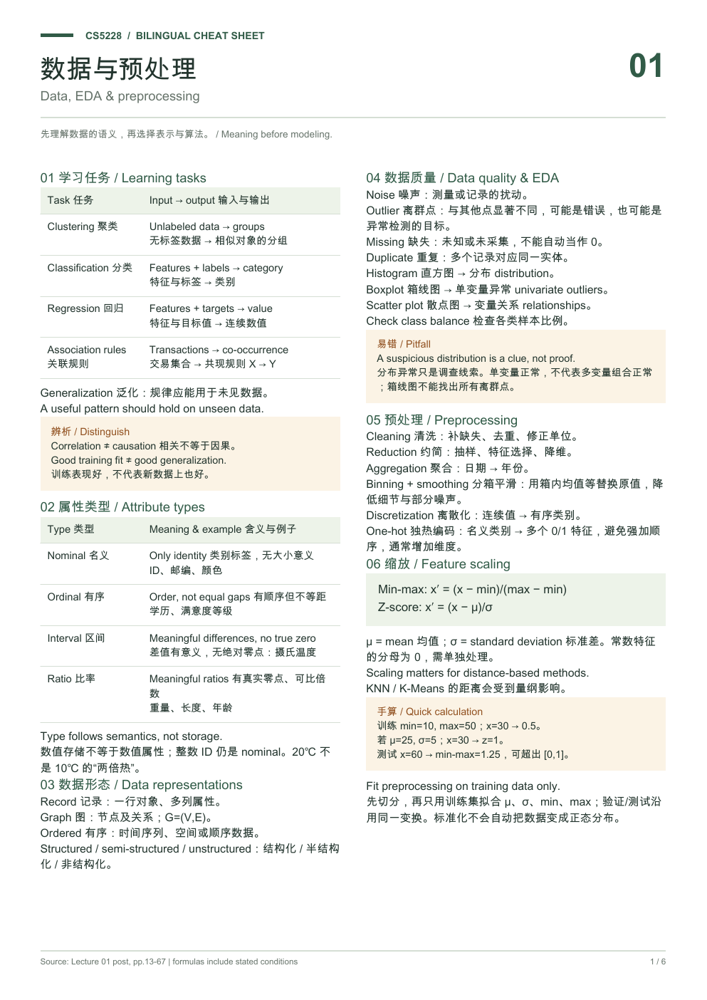
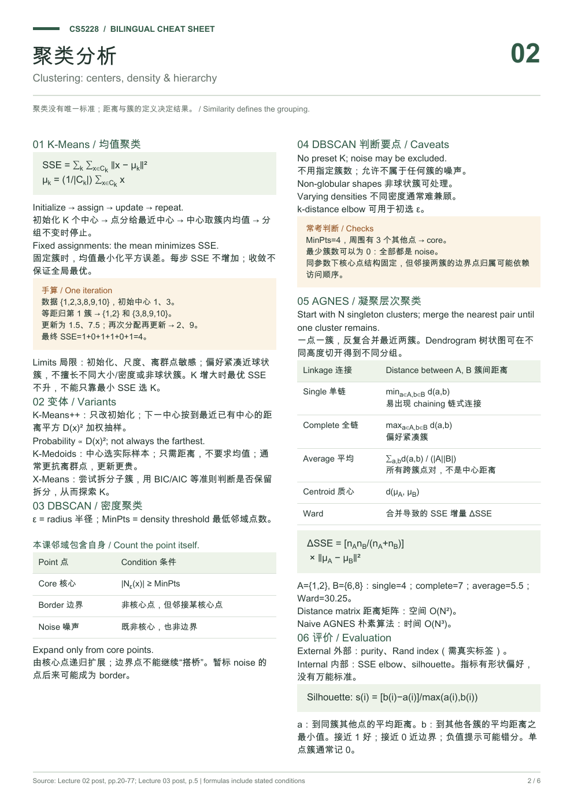
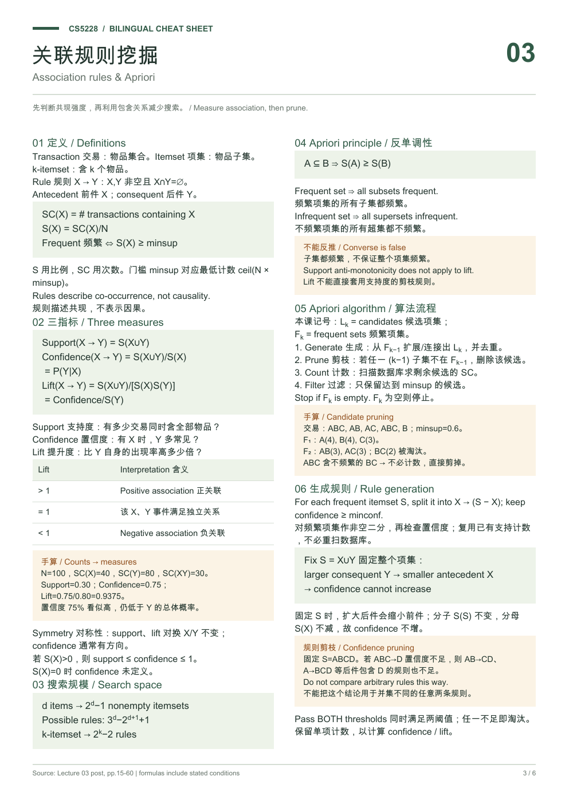
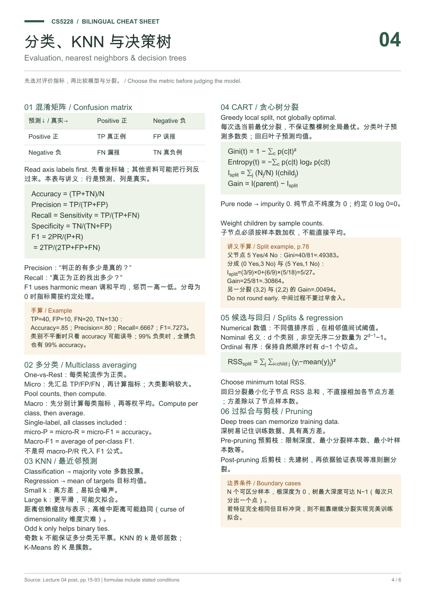
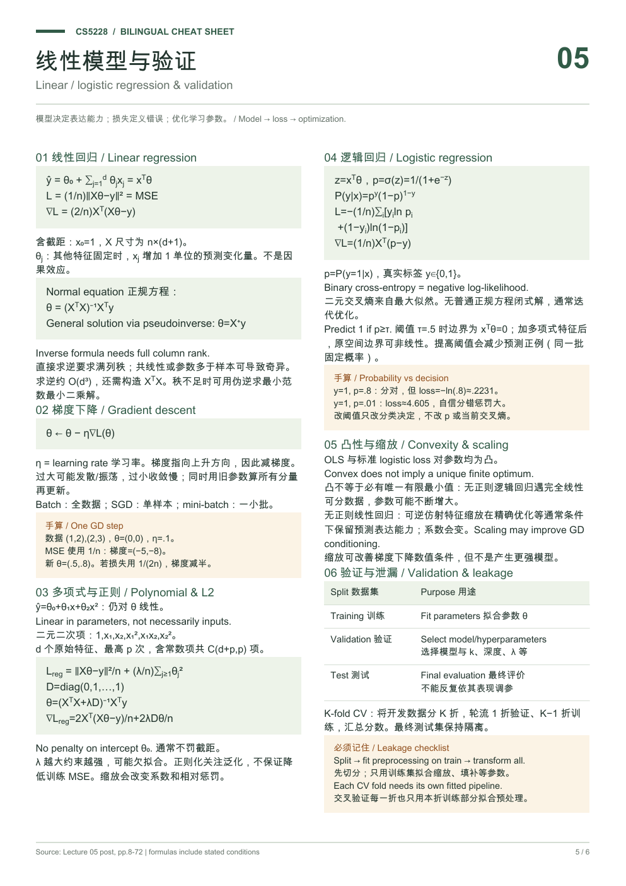
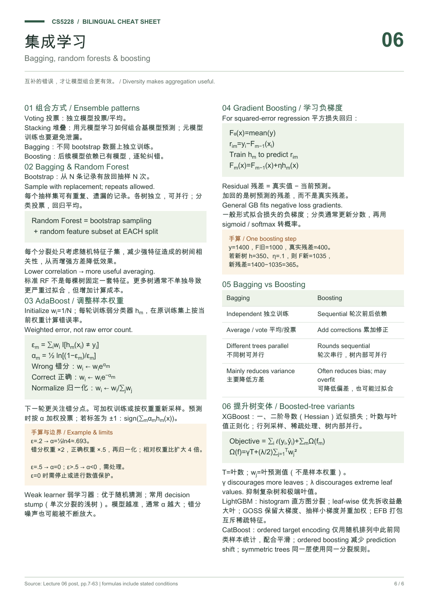

把知识串起来，
把题目算明白。
从数据准备到集成学习，用中文理解六讲的关键概念。每章都有公式、手算例题与自测，学完不止是“看懂”。
当前按 Lecture 1–6 全覆盖整理。具体考试范围与题型请以课程公告为准；这里的复习优先级是学习建议。
每讲一页：核心概念、公式、算法步骤与易错点。
六讲，一条学习主线
建议依次学，也可以按薄弱点跳转先理解你的数据
属性类型、数据质量与预处理。为什么“看起来是数字”不等于数值特征？
没有标签，如何分组？
K-Means、DBSCAN、层次聚类。三种不同的“相似”定义。
一起出现，意味着什么？
Support、Confidence、Lift，以及 Apriori 为什么能够剪枝。
从相似到预测
评价指标、KNN 与决策树。学会判断一次分裂是否更好。
用函数学习规律
线性回归、梯度下降、逻辑回归，以及正确的模型验证流程。
让多个模型协作
随机森林、AdaBoost 与梯度提升。理解“独立投票”和“逐步纠错”。
怎么用这份手册
第一遍建立整体框架；第二遍重点练聚类迭代、Apriori 剪枝、分类指标、树分裂、梯度更新与 Boosting。能够说清“为什么”，比只记住公式更可靠。
进度仅保存在当前浏览器。页面不联网，也不上传答题数据。练习与交互数据为教学用例，不是历年真题。
中英 Cheat Sheet
覆盖 Lecture 1–6，每讲一页，共 6 页 A4。保留英文术语，搭配中文解释、公式与易错点；下方可逐页查看，打印请使用 PDF 原文件。






先问：这些数据代表什么？
数据挖掘的目标，是从已有数据中找到能推广到新数据的规律。数据质量和表示方式，决定后面的算法是否在解决正确的问题。
1. 找到模式，不等于发现知识
随机数据里也能找到巧合。一个有用的模式应该有意义，并且能在未见过的数据上保持有效，这就是泛化（generalization）。例如，冰淇淋销量和溺水人数一起上升，可能因为天气变热，而不是冰淇淋导致溺水。
2. 四类属性：能对它做什么运算？
| 类型 | 含义 | 例子 | 要点 |
|---|---|---|---|
| Nominal 名义 | 只有类别区别 | ID、邮编、眼睛颜色 | 能判断相同/不同，不能解释大小或差值 |
| Ordinal 有序 | 有自然顺序 | 满意度、学历等级 | “高一级”不一定有相同的量化差距 |
| Interval 区间 | 差值有意义，无绝对零点 | 摄氏温度、日历日期 | 20℃ 不是 10℃ 的“两倍热” |
| Ratio 比率 | 差值、比值都可解释 | 重量、长度、年龄 | 20kg 是 10kg 的两倍 |
看语义，不看存储类型。邮编即使用整数保存也只是标签；把“差、一般、好”编码为 1、2、3，并不能证明类别之间等距。
3. EDA：先认识数据，再建立模型
探索性数据分析（Exploratory Data Analysis）用于检查分布、缺失值、重复记录、类别比例和变量关系。直方图看分布，箱线图看单变量异常，散点图看变量间关系。
- Noise 噪声：测量误差等对信号的扰动。
- Outlier 离群点：显著不同于其他记录的点。它可能是错误，也可能是要发现的欺诈交易。
- Missing value 缺失值：“没有记录”不等于数值 0。填补策略需要结合业务。
- Duplicate 重复记录：不同记录可能指向同一个现实对象，需要合并或去重。
4. 预处理：改变数据，让方法适用
| 操作 | 做什么 | 目的 |
|---|---|---|
| Cleaning 清洗 | 处理缺失、重复、错误单位 | 提高数据质量 |
| Reduction 约简 | 抽样、特征选择、降维 | 减少数据或计算量 |
| Aggregation / Smoothing | 按年汇总、用箱内均值替代原值 | 简化细节，降低部分噪声 |
| Discretization 离散化 | 年龄 → 青年/中年/老年 | 连续值转有序类别 |
| One-hot encoding | 类别 → 多个 0/1 特征 | 避免给名义类别强加数值顺序 |
Z-score: x′ = (x − μ) / σμ 为均值，σ 为标准差；常数特征的分母为 0，需要单独处理。
某特征的训练范围为 10–50，x = 30 的 min–max 值为 (30−10)/(50−10) = 0.5。若训练均值为 25、标准差为 5，则 z-score = 1，即高出训练均值 1 个标准差。
尺度会影响欧氏距离：收入的数值可能比年龄大几千倍，未缩放时距离容易被收入支配。因此 KNN、K-Means 特别需要关注尺度。标准化并不会自动把数据变成正态分布。
按讲义顺序，把每一步讲透
以下内容按 cs5228-lecture01 讲义页码展开，补全讲义中的图示、课堂例子和 Quick Quiz 的解题思路。标 补充 的内容超出讲义，仅供理解。
① 什么是知识发现 / 数据挖掘：DIKW 与 KDD 流程p.13–15
讲义采用的定义（Frawley et al., 1991）：从数据中非平凡地提取隐含的、先前未知的、可能有用的信息。三个关键词逐一对应“什么不算数据挖掘”。
数据 → 信息 → 知识 → 智慧（讲义超市例子）
| 层级 | 例子 | 理解了什么 |
|---|---|---|
| Data | 2023-08-15T15:05:30Z；1.2933, 103.7844 | 原始记录，没有语境 |
| Information | 某顾客 8 月 15 日在 FairPrice NUH 买了面包、麦片、牛奶 | 理解关系（relationships） |
| Knowledge | 很多顾客经常同时买牛奶和麦片 | 理解模式（patterns） |
| Wisdom | 据此优化商品摆放、动态定价、捆绑促销 | 理解原理（principles）并行动 |
KDD 流程（Fayyad et al., 1996）
Data →Selection→ Target Data →Preprocessing→ Preprocessed Data →Transformation→ Transformed Data →Data Mining→ Patterns →Post-processing→ Knowledge
- Selection：找出与任务相关的数据。
- Preprocessing：处理缺失、去重、特征选择、归一化……
- Transformation：转换为适合算法的表示。
- Data Mining：聚类、分类、回归、关联、相关分析……
- Post-processing：可视化、解释、理解。
数据挖掘只是整条流程中的一步；本讲后半部分（数据质量、EDA、预处理）讲的都是它前面的步骤。
什么不是数据挖掘（p.15）
- 平凡的提取：在电话簿里查号码；按专业给学生分组；算公司总销售额。这些是查询或统计，答案的“形式”事先已知。
- 不产生新模式的分析：监测病人心率是否异常（规则已知）；使用搜索引擎（检索已有信息）。
给定超市交易数据，哪个“不算”真正的数据挖掘？A 找最常一起购买的最大商品集合（频繁项集）、B 按购买行为找相似用户（聚类）都是在发现未知模式。D “周末晚 6 点后最常卖的商品”只是先过滤、再计数排序，一条 SQL 查询就能完成，属于平凡的聚合统计。
② 什么样的模式有用：泛化、虚假相关与混杂变量p.16–19
“只要拷问数据足够久，它什么都会招。”（Coase）主要目标是泛化：模式要在没见过的数据上仍然准确。常见破坏原因是数据太少或数据有偏。
体温恒温 → 胎生 → 四足 → mammal。这棵树在训练动物上可能完全正确，但人（不是四足）会被判为 non-mammal，鸭嘴兽（卵生）也会被判错。训练数据里没有这类样本，规则就学得过窄 —— 这正是泛化失败。
数据里总能找到“模式”（p.17）
讲义列举了《Predictive Analytics》里的“惊人发现”：女性名字的飓风致死更多、用 Chrome/Firefox 的员工表现更好、素食者更少误机、冰淇淋销量高时鲨鱼袭击多……它们都是相关，不能说明因果。
- Confounding variable 混杂变量：气温升高同时导致冰淇淋销量和下水人数（从而鲨鱼袭击）上升。
- Spurious correlation 虚假相关：两个变量之间看似有关系，实际上由第三个因素或纯巧合造成。
Reality check（p.18）
“冰淇淋销量越高，鲨鱼袭击越多”和“抗缪勒管激素浓度越高，促卵泡激素浓度越低”在形式上完全一样。我们会觉得前者荒谬、后者可信，只是因为背景知识不同。讲义提醒：“这不合理！”很少是好的论证——判断模式要看数据来源、样本、机制与验证，而不是直觉。
p.19 引用《侏罗纪公园》：“只顾着能不能做，没想过该不该做。”数据挖掘也涉及伦理：能从数据中推断出的东西，不一定应该去推断（见 p.64–67 的 Quiz）。
③ 六类常见任务：输入是什么，模式是什么p.22–28
| 任务 | 输入 | 要找的模式 | 课程位置 |
|---|---|---|---|
| Association rules | 交易数据（每条记录是一组物品） | 根据一些物品的出现预测另一些物品：{anosmia, fatigue}→{covid-19} | 第 3 讲 |
| Clustering | 数据 + 明确定义的相似度 | 簇：簇内相似度最大化，簇间相似度最小化 | 第 2 讲 |
| Classification | 多属性数据集 | 类别型属性作为其他属性的函数（KNN、决策树、线性分类……） | 第 4–6 讲 |
| Regression | 多属性数据集 | 数值型属性作为其他属性的函数（KNN、回归树、线性回归……） | 第 4–6 讲 |
| Graph mining | G = (V, E)：节点是数据点，边是关系 | 社区发现、找“重要”节点 | 后续 |
| Recommender systems | 用户对物品的评分矩阵 | 利用物品特征、用户或物品之间的相似性预测缺失评分 | 后续 |
分类例子（p.24）：用 Age、Education、Marital Status、Annual Income 预测 Credit Default。讲义的树：先按 Marital Status 分，Single 再看 Annual Income（< 65k → NO，≥ 65k → YES），Married 再看 Education（Master/Bachelor → NO，PhD → YES）。可以逐行核对：23 岁 Masters Single 75k → YES ✔；35 岁 Bachelor Married 50k → NO ✔。
回归例子（p.25）：散点图横轴是鞋印长度（约 27–35 cm），纵轴是身高（约 165–195 cm），红线是拟合直线。问题“鞋印 32.2 cm 的人预计多高？”的答案就是把 32.2 代入这条直线读出的数值 —— 输出是连续值，所以是回归而不是分类。
推荐例子（p.27）：Bob 对 Clueless、Jarhead、Big、Rocky 的评分为 1、4、0、2，与 Alice（2、5、0、1）和 Erin（1、3、0、3）的模式很接近，而她们给 Heat 分别打了 4 分和 5 分。基于用户相似性，可以推测 Bob 也会给 Heat 较高的分数，从而推荐给他。这就是“利用用户之间的相似性”；“利用物品特征”则是看 Heat 与 Bob 喜欢的电影在类型、演员等方面是否相似。
p.28 提到：生物医学研究中常用的数据挖掘算法清单，大多在本课覆盖（主要例外是深度学习）。
④ 属性类型四级：允许哪些运算 + 三道 Quiz 解析p.30, 35–37
| Nominal | Ordinal | Interval | Ratio | |
|---|---|---|---|---|
| 大类 | Categorical（定性） | Numerical（定量） | ||
| 含义 | 值只是标签 | 标签 + 有意义的顺序 | 测量值，距离有意义 | 测量值，比值有意义 |
| 运算 | =, ≠ | =, ≠, <, > | + − | + − × ÷ |
| 讲义例子 | 性别、眼睛颜色、邮编 | 门牌号、学历 | 摄氏体温、日历日期 | 年龄、体重、收入、血压 |
每一级都继承上一级的运算。判断方法：问“哪种运算有意义”。10℃ 到 20℃ 与 20℃ 到 30℃ 的差相同（区间有意义），但 0℃ 不是“没有温度”，所以 20℃ ≠ 2 × 10℃（比值无意义）。年龄 0 表示真正的“零”，40 岁确实是 20 岁的两倍。
讲义把门牌号列为 ordinal：门牌号有顺序（12 号在 10 号之后），但 12 − 10 = 2 并不代表距离。
- Annual Income → D Ratio。有真正的零点，100k 是 50k 的两倍。
- Education → B Ordinal（A 也可接受）。Bachelor < Masters < PhD 有自然顺序，但“等级差”无法量化；如果认为学位之间不一定有严格高低，也可以当作 nominal。
- ID → A Nominal（一般情况）。101、102 只是标签，即使存成整数，比大小也没意义（若 ID 按注册顺序递增，理论上带有顺序信息，所以讲义加了 “in general”）。
⑤ 数据的类型与表示p.31–34
| 类型 | 特点 | 例子 |
|---|---|---|
| 结构化 | 遵循预定义数据模型，每个对象有同样固定的属性；易于搜索、聚合、分析 | 关系数据库、电子表格 |
| 半结构化 | 没有严格模式，结构化与非结构化混合；“带标签的非结构化数据” | XML、JSON、CSV；照片 + 拍摄时间、地点、曝光、分辨率等元数据 |
| 非结构化 | 没有固定数据模型，需要更高级的分析技术 | 图像、视频、音频、文本、社交媒体 |
- Record data：数据矩阵（每条记录有同一组固定属性，如信用审批表）与交易数据（每条记录是一组物品，如症状列表）。
- Graph data：交通网络（LTA）、社交网络。
- Ordered data：序列，例如股票价格随时间变化。
同一份信息可以有多种表示；选择表示方式本身就决定了哪些算法可用（交易数据 → 关联规则；数据矩阵 → 分类/回归/聚类）。
⑥ 数据质量四大问题：噪声、离群点、缺失值、重复p.40–43
Noise：数据 = 真实信号 + 噪声
- 故障传感器读数（以及固有噪声、外界干扰）
- 人或机器录入错误；传输错误
- 格式不一致：ISO 时间 vs Unix 时间；DD/MM/YYYY vs MM/DD/YYYY
- 约定不一致：米 vs 英里，米 vs 厘米
Outliers：两种截然不同的处理
- 情况 1 · 离群点是噪声：会干扰分析 → 尝试删除，或使用对离群点不敏感的方法。
- 情况 2 · 离群点就是目标：信用卡欺诈、入侵检测——要找的恰好是罕见、异常的点。
Missing values
原因：没有采集（传感器坏了、有人拒绝报告年龄）；或属性不适用（儿童没有收入）。处理方式：
- 删除含缺失值的数据点；
- 删除含缺失值的属性（并非所有属性都同样重要）；
- 尝试填补（例如用附近传感器的平均温度）。
讲义表中 9 条记录有 2 个年龄缺失、3 个收入缺失。按“删除数据点”会丢掉 5 条中的大部分信息；按“删除属性”则失去收入这一可能很重要的特征 —— 两者都有代价，需要结合任务权衡。
Duplicates
- 完全重复：属性值完全相同，较容易消除。
- 近似重复：同一个人但电话号码格式不同等，一般非常困难。
重复在合并多个异构数据源时尤其严重；去重算法超出本课范围。
⑦ EDA 实战：心血管疾病数据集里发现了什么p.45–54
EDA 通过基本变换与可视化“认识数据”：评估质量、做合理性检查、获得初步洞察、提出新问题。没有形式化流程或严格规则。讲义用（刻意修改过的）Cardiovascular Disease 数据集演示：
| 工具 | 讲义发现 | 教训 |
|---|---|---|
| 直方图 p.46 | 身高呈两个峰：50% 用英寸、50% 用厘米；体重 80% 用千克、20% 用磅 | 双峰分布可能来自单位混用，而不是真实的两类人 |
| 箱线图 p.47 | 有人身高落在“世界最高前 10 人”范围 | 箱线图让离群点显式化；但 CEO 工资也是离群点而非错误，是否删除取决于分析目标 |
| 散点图 p.48 | 身高极高但体重 < 100 kg（不现实）；170 cm 但 < 25 kg（无法存活）；还可能是极度肥胖的儿童、侏儒症…… | 单看每个属性都正常，组合起来才不合理；解释需要对数据的深入理解，且高维时不一定可行 |
| 缺失值 p.49 | 未公开体重的人被填了默认值 0 | “0” 冒充了真实值，连求平均这种简单分析都会被拉偏 |
| 属性类型 p.50 | 胆固醇字段取值 1/2/3，看似数值，实为 ordinal（正常 / 偏高 / 远高于正常） | 通常要查数据集文档；自动化方法一般无法判断 |
| 类别分布 p.51 | 检查各类标签比例 | 分类任务一般受益于类别平衡；类别分布也影响评估（连接第 4 讲） |
| t-SNE p.52 | MNIST：6 万张 28×28 手写数字 = 784 个特征（灰度 0–255） | 高维数据可先降到 2 维可视化，观察类别是否可分 |
非结构化数据（p.53）也要做 EDA：文本看语言、词表大小、正式/非正式（俚语、表情）；图像/视频看尺寸、分辨率、色彩空间；音频看采样率、频率范围、录音类型（人声还是音乐）。
- A ✘：离群点不一定是噪声，可能正是分析目标。
- B ✘：类别平衡只是有利条件之一，不保证好结果。
- C ✔：箱线图只看单个属性，发现不了“170 cm、25 kg”这种组合异常。
- D ✘：分布奇怪只是调查线索，并不证明出错（可能是数据本身的真实特性）。
课堂活动（p.38）“拿到客户的大 CSV 要建分类器，你先做什么？”——本节就是答案的骨架：看属性含义与类型、检查缺失/重复/单位、画分布、看标签比例。
⑧ 预处理：清洗、约简、分箱平滑的完整算例p.56–59
三个目的：提高数据质量（Garbage in, garbage out）；为算法生成合法输入；降低复杂度以便分析。四项核心任务：cleaning、reduction、transformation、discretization。
Data cleaning
删除或填补缺失值；识别并删除离群点（如果离群点不是分析目标）；识别并删除/合并重复；纠正错误和不一致（如英寸转厘米）。这些任务都不平凡，且高度依赖应用。
Data reduction 的三个层面
- 减少数据点：抽样（随机或分层），常用于初步分析或数据极大时。
- 减少属性：删除无关属性（如 ID，或宗教、性取向等伦理上有问题的属性）；降维（PCA、LDA、t-SNE 等）。
- 减少属性取值（一种去噪）：聚合/泛化；分箱平滑。
聚合 / 泛化
数值属性沿概念层级上移（天 → 年）；类别属性泛化（如城市 → 国家）。
① 按身高排序：55 57 59 60 64 65 65 66 67 67 67 68 68 70 70 70 …
② 等大小分箱（每箱 5 个）：[55 57 59 60 64] [65 65 66 67 67] [67 68 68 70 70] [70 …]
③ 每个值换成箱均值：(55+57+59+60+64)/5 = 59；(65+65+66+67+67)/5 = 66；(67+68+68+70+70)/5 = 68.6 ≈ 69。结果：59 59 59 59 59 66 66 66 66 66 69 69 69 69 69 72 …（讲义对均值做了取整）。
注意第三个 67 被分到了第 3 箱：等频分箱按位置切，不保证相同值落在同一箱。
⑨ 变换、归一化、离散化与 One-hot 的算例p.60–63
Attribute construction：由已有属性推出新属性，例如 weight, volume → density。一些约简技术（降维、聚合、分箱）本身也是变换。
Standardization： x′ = (x − μ) / σ
体重 62、85、64、82、56（kg）。min = 56，max = 85，差 29：
Min–max：62 → 6/29 ≈ 0.207；85 → 1；64 → 8/29 ≈ 0.276；82 → 26/29 ≈ 0.897；56 → 0。
Z-score：μ = 69.8；离差平方和 = 60.84 + 231.04 + 33.64 + 148.84 + 190.44 = 664.8，总体标准差 σ = √(664.8/5) ≈ 11.53。62 → −0.68；85 → 1.32；64 → −0.50；82 → 1.06；56 → −1.20。
讲义表格里的数值（如 0.273684、−0.847867）是用整列数据的 min/max 与均值算的，所以与这里只用 5 个值的结果不同；变换的形状（大小顺序不变）一致。
Discretization（p.62）
把连续属性变成 ordinal：有些算法只接受类别属性；也可以把回归任务变成分类任务。讲义用 3 个人工设定的区间把体重分为 light (0, 70]、average (70, 90]、heavy (90, 150]：86 → average，57 → light，103 → heavy。
One-hot encoding（p.63）
把类别属性展开为一组 0/1 属性，让所有面向数值特征的方法都能使用类别数据。weight_class ∈ {light, average, heavy} → 三列 weight_class_light / _average / _heavy，每行恰好一个 1：average → (0, 1, 0)。讲义强调这只是众多编码策略之一。
为什么不直接用 1/2/3？ 补充对 nominal 属性这会强加不存在的顺序和距离（“3 − 1 = 2”）；对 light/average/heavy 这种 ordinal 属性，用有序整数编码有时也合理，取决于模型能否利用顺序。
⑩ 伦理与相关性：应该删掉哪些属性？p.64–67
在 ID、Age、Education、Marital Status、Annual Income、Email 中，一般应删除 ID + Email：它们是唯一标识，每条记录都不同，无法泛化到新数据，模型只会“记住”它们。
但讲义 Side Note（p.65）提醒：有研究《How extraverted is honey.bunny77@hotmail.de? Inferring personality from e-mail addresses》表明邮箱地址本身可能携带信息 —— 所以是“一般情况下”删除。
信用审批数据含 Age、Religion、Education、Has Account、Annual Income、Zodiac Sign：
- Religion：伦理上有问题的敏感属性，用于信贷决策会造成歧视。
- Zodiac Sign：与信用无合理关联（星座）。
- Has Account：表中所有人都是 Yes，是常数属性，没有区分能力。
Side Note（p.67）：CNA 报道确有公司用星座等方式辅助招聘 —— 数据中可能“找得到”关系，但并不意味着应该使用。
本讲总结（p.69）
- 什么是（不是）数据挖掘；Data → Knowledge 的知识发现流程；常见任务概览。
- 数据准备：数据类型与数据质量、探索性数据分析、数据预处理 —— Know your data & clean your data!
依据：cs5228-lecture01-post.pdf · 属性类型 p.30–37；数据质量与 EDA p.40–54；预处理 p.56–67。例题为配套讲解。
聚类，是给“相似”一个定义。
没有预先给定的标签。你选择距离、簇的形状假设和算法，算法才知道怎样把数据分组。
1. K-Means：让点靠近自己的中心
给定 K 个簇，K-Means 试图减小每个点到所属簇中心的平方距离总和：
μk = (1 / |Ck|) ∑x∈Cₖ x
- 初始化：选择 K 个中心。
- Assignment：把每个点分给最近的中心。
- Update：把中心移到该簇所有点的均值。
- 重复分配和更新，直到分组不再变化。
为什么用均值？固定一个簇时，均值最小化簇内平方误差。为什么会收敛？分配与更新都不会增加 SSE。但它通常只到达局部最优，不保证全局最佳分组。
亲手走一轮 K-Means
一维数据为 1、2、3、8、9、10；K = 2，初始中心为 1 和 3。同距离时归给中心 1。圆点/方点表示数据（分组后形状区分簇），菱形表示中心。
| 方法 | 改变了什么 | 记忆点 |
|---|---|---|
| K-Means++ | 优化初始化 | 新中心的抽样概率 ∝ 到最近已有中心的距离平方；不是每次直接选最远点 |
| K-Medoids | 中心必须是实际数据点 | 适合只定义了距离、无法求均值的对象；通常更抗离群点，更新更贵 |
| X-Means | 用评分准则判断是否拆分子簇 | 自动探索 K，仍依赖所选模型评分 |
2. DBSCAN：沿着稠密区域扩展
参数 ε 定义邻域半径，MinPts 定义形成稠密区域的最低点数。本课讲义的邻域包含该点自身。
| 点类型 | 判断规则 | 是否继续扩展 |
|---|---|---|
| Core 核心点 | ε 邻域中的点数 ≥ MinPts | 是 |
| Border 边界点 | 不是核心点，但落在某核心点的 ε 邻域内 | 否 |
| Noise 噪声点 | 以上都不是 | 否 |
从一个核心点出发，吸收邻居，再从新发现的核心点继续扩展。边界点不能当桥梁继续连接。探索初期暂标为噪声的点，后来可能被某核心点吸收，成为边界点。
MinPts = 4。某点附近有 3 个其他点，连同自身共 4 个，因此是核心点。若所有点都没有足够邻居，DBSCAN 可以输出 0 个簇，全部点为噪声。
它能发现非球状簇，不需预先指定 K；但同一组 ε、MinPts 难以同时适配密度差异很大的簇。k-distance 曲线的拐点可帮助初选 ε。
3. AGNES：把最近的两簇不断合并
凝聚型层次聚类从“一点一簇”开始，每次合并最接近的两簇，形成 dendrogram（树状图）。在不同高度切开树，就得到不同数量的簇。关键是：簇与簇的距离如何定义？
| Linkage | 定义 | 主要特点 |
|---|---|---|
| Single | 两簇点对距离的最小值 | 能连接细长形状；易被噪声串成链 |
| Complete | 两簇点对距离的最大值 | 偏好紧凑簇；可能拆散较大的自然簇 |
| Average | 所有跨簇点对距离的平均值 | 折中；不是两个质心间的距离 |
| Centroid | 两个簇均值之间的距离 | 直接比较中心 |
| Ward | 合并造成的 SSE 增量 | 优先选择最少增加簇内误差的合并 |
A = {1, 2}，B = {6, 8}。跨簇距离为 5、7、4、6，因此 single = 4，complete = 7，average = 5.5。两簇均值为 1.5、7，所以 Ward 的 SSE 增量为 (2×2/4)×5.5² = 30.25。
距离矩阵需要 O(N²) 空间。朴素实现 N−1 次合并、每次扫描距离矩阵，时间 O(N³)；更好的数据结构或特定 linkage 可加速。
补充复习：怎样评价聚类？
第 3 讲 p.5 提到：有真实标签时可用 purity、Rand index；没有标签时可用 SSE 肘部法、轮廓系数。
a(i) 为该点到同簇其他点的平均距离；b(i) 为它到其他每个簇的平均距离中的最小值。s 接近 1 表示分离较好，接近 0 表示靠近边界，负值提示分组可能不合适。单点簇通常约定为 0。这些指标也有形状偏好，不能取代任务判断。
按讲义顺序，把每一步讲透
以下内容按 cs5228-lecture02 讲义页码展开，补全推导、图示中的数字、AGNES 距离矩阵的完整演算和各 Quick Quiz 的解析。标 补充 的内容超出讲义，仅供理解。
① 开头回顾里的三个澄清（容易考判断题）p.5–7
- “EDA 结果可疑 ⟹ 数据有错”是错的。讲义例子：婴儿护理数据集同时含婴儿和父母，年龄分布会出现两个相距很远的峰，看起来奇怪，数据却完全正确。
- “删掉可疑属性 ⟹ 结果更好”不成立。例如从信用违约预测中删除星座，准确率也可能下降（数据里可能恰好存在某种相关）。
- “删掉敏感属性 ⟹ 没有偏见 / 完全隐私”不成立。删除 Ethnicity 并不保险：如果它与 Education、Income 等其他属性相关（讲义引用美国各族裔受教育程度的统计），模型仍可通过这些代理变量间接利用它。
- 被篡改的数据：有时数据就是“看起来不对”，例如不符合直觉的分布（讲义引用 Data Colada 第 98 篇对学术造假数据的分析）。EDA 也是发现这种情况的手段。
② 聚类的概念：簇的类型与聚类结果的类型p.9–18
目标：把无标签数据分成相似对象组成的组，最大化簇内相似度、最小化簇间相似度。聚类提供数据的中观（meso）视角：介于单个数据点（micro）与整个数据集（macro）之间。
应用：市场细分（对同一簇客户推送定制促销）；推荐系统（按类型、时长、预算等把电影聚类，推荐用户喜欢的电影所在簇）；网页搜索多样化（从不同簇中返回结果，保证多样性）。
三个要素（p.11）
| 对象表示 | 对应的相似度 |
|---|---|
| 多维点坐标 x, y | 欧氏距离 |
| 集合 A, B（如一笔交易的物品） | Jaccard 相似度 = |A∩B| / |A∪B| |
| 向量 u, v（如 TF-IDF） | 余弦相似度 = u·v / (‖u‖‖v‖) |
再加上聚类算法：决定对象是否属于某个簇的过程。p.12 的同一组点可以合理地看成 2、3 或 5 个簇 —— “好”的聚类并不唯一。
簇的四种类型（p.13–14）
- Well-separated：簇内任一点与簇内每个点的距离，都比与簇外任何点更近（最严格）。
- Center-based：每个点离自己簇的“中心”比离其他簇的中心更近；欧氏空间中心常取均值，称 centroid（K-Means 的假设）。
- Contiguity-based：两点足够相似就在同一簇；每个点至少与簇内某个点比与簇外点更相似（可形成链状，类似 single linkage）。
- Density-based：簇是被低密度区域包围的高密度区域；通常比 contiguity-based 更能处理噪声（DBSCAN 的假设）。
聚类结果的三组对比（p.15–17）
| 对比 | 一方 | 另一方 |
|---|---|---|
| 结构 | Partitional：划分成不重叠子集，每个对象恰好属于 1 个簇（或不属于任何簇） | Hierarchical：簇可以嵌套，一个点在不同层级属于不同簇 |
| 归属 | Exclusive：每个对象只属于 1 个簇 | Overlapping：可同时属于多个簇；Fuzzy：以一定概率属于所有簇 |
| 覆盖 | Complete：每个对象至少被分到 1 个簇 | Partial：有对象不属于任何簇（噪声、离群点） |
唯一不能聚类的情况是数据点之间没有定义相似度或距离。全是 nominal 属性可以用 Jaccard 或汉明距离；一维数据可以聚类（本讲的 K-Means 交互例子就是一维）；聚类不要求正态分布。
③ K-Means：目标函数、为什么中心是均值、收敛过程p.20–27
特征：簇是 centroid-based；聚类结果是 partitional、exclusive、complete。输入是 d 维欧氏空间中的点 x1…xN 和簇数 K，输出 K 个中心 c1…cK。
找到全局最优是 NP-hard 的（讲义板书：精确求解约 O(NKd+1)），因此用贪心算法 —— Lloyd's algorithm。
为什么中心取均值（p.22 推导）
固定分组，对某个中心 ck 求导，只有第 k 个簇的项与它有关：
⇒ mk·ck = ∑x∈Ck x ⇒ ck = (1/mk) ∑x∈Ck xmk = |Ck|。结论：欧氏距离平方下，簇中心 = 簇内所有点的均值。
Lloyd 算法（p.23–25）
- 初始化：选 K 个点作为初始中心。
- 重复：2a Assignment——每个点分给最近的中心；2b Update——每个中心移到所分配点的均值。
- 直到分配不再改变。
收敛过程中的 SSE（p.26 讲义数字）
4.61 →(U) 3.26 →(A) 2.24 →(U) 0.77 →(A) 0.55 →(U) 0.45 →(A) 0.42 →(U) 0.39 →(A) 0.39 →(U) 0.38 →(A) 0.38 →(U) 0.38。
- 好消息：K-Means 一定收敛。Assignment 在中心固定时让每个点选最近中心，SSE 不增；Update 在分组固定时取均值，是该分组下 SSE 的最小值，也不增。分组的可能数量有限，所以不会无限循环。大部分改进发生在前几轮。
- 坏消息：只保证局部最优，不保证全局最优；结果依赖初始化。
④ K-Means 的局限：分布假设、初始化、空簇 + 两道 Quizp.28–31, 35
对“自然”簇敏感（p.28）：非球状簇（如月牙形）、大小差别很大的簇、密度差别很大的簇，K-Means 都容易切错。原因是它按“离哪个中心最近”划分，边界是两中心的垂直平分线。
初始化影响结果（p.29）：同一份数据三次不同初始化，得到 SSE 分别为 0.38、0.94、0.54 的三种聚类。实践中常多次随机初始化，取 SSE 最小的一次。
空簇（p.30）：如果一个中心被其他中心“挡住”，没有任何点离它最近，它就得到空簇，而且之后位置不会再更新。
每个点总要分给某个最近的中心，所以至少有一个簇非空。最坏情况下，所有点都离同一个中心最近，其余 K − 1 个簇全空。
即使初始化“理论最优”，也不能保证任何情况下都没有空簇。最简单的反例：数据中不同的点少于 K 个（如大量重复点），那么无论中心怎么放，都不可能让 K 个簇都非空。
⑤ K-Means++、K-Medoids、X-Means 细节p.32–34
K-Means++（只改初始化）
- 随机选一个点作第一个中心。
- 重复：对每个点 x 计算 D(x) = 到最近已有中心的距离；按 正比于 D(x)² 的概率随机选下一个中心。
- 直到选够 K 个。
目的是让中心分散开；实践表现更好，并且有理论保证（期望 SSE 在最优解的 O(log K) 倍以内 补充）。讲义图中离已有两个中心都很远的点“最有可能成为第 3 个中心”——是概率最高，不是一定选中。
一维点 0、1、10，第一个中心选 0。D² 分别为 0、1、100，第二个中心选中 10 的概率 = 100/101 ≈ 0.99，选中 1 的概率 ≈ 0.01。
K-Medoids（灵活性 vs. 性能）
- 中心（medoid）必须是真实数据点，不需要求平均（集合、字符串等复杂对象无法求平均）。
- 只需要距离或相似度的概念，不限于欧氏距离。
- 对噪声和离群点更鲁棒（中心不会被极端值拉走）。
- 主要问题是性能：Update 步要把 medoid 与簇内每个点试着交换，计算代价（如 SSE）的变化，选交换后代价最小的点作新 medoid。
X-Means（自动选 K）
先用 K = 2 运行 K-Means；然后对每个子簇再用 K = 2 运行；只有当拆分按评分函数“有意义”时才真正拆分。评分函数例子：BIC、AIC、MDL —— 它们在拟合程度与模型复杂度之间权衡，避免无限拆分。
⑥ DBSCAN：两阶段算法与讲义伪代码p.37–42
特征：density-based 簇；结果是 partitional、exclusive、partial（噪声点不属于任何簇）。输入：点集、半径 ε、最少点数 MinPts。
三类点（p.38）
- Core：ε 邻域内至少 MinPts 个点（包括自身），构成簇的内部。
- Border：非核心点，但邻域内至少有一个核心点，构成簇的边界。
- Noise：其他所有点；也是算法中点的默认标签。
Phase 1：找新的簇种子（p.39）
随机挑一个未探索的点 x；若它的邻居少于 MinPts，就标为 noise（之后可能被改）；重复直到找到一个新的核心点 xc。讲义动画：第 1、2、3 次挑到的都是噪声，第 4 次挑到核心点。
Phase 2：探索簇（p.40–42 伪代码）
S ← get_neighbors(x_c, ε)
WHILE |S| ≠ 0:
s ← S.pop()
IF s.label = "noise": s.label ← x_c.cluster_id # 噪声被改为边界点
IF s.label ≠ "unknown": CONTINUE # 已探索过
s.label ← x_c.cluster_id
neighbors ← get_neighbors(s, ε)
IF |neighbors| ≥ MinPts: S ← S ∪ neighbors # s 也是核心点，继续扩展
核心点的所有邻居都进入同一簇，邻居要么是核心点、要么是边界点，绝不会是噪声。扩展在边界点处停止；边界点之外的点，之后在 Phase 1 中要么成为噪声，要么成为新簇的一部分。
⑦ DBSCAN 的性质、局限、参数选择 + Quizp.43–50
课堂活动：DBSCAN 是确定性的吗？（p.43–44）
- 总会收敛：每个点都会被探索（在 Phase 1 或 2），且点的类型不会改变，唯一例外是 noise → border。
- 不完全确定：Phase 1 引入随机顺序。核心点和噪声点是确定的；但一个边界点可能同时位于两个不同簇的核心点邻域内，它归哪一簇取决于哪个簇先被探索。
局限（p.45–46）
无法处理不同密度的簇：ε 小了稀疏簇变噪声，ε 大了稠密簇连成一片。对参数非常敏感：讲义三张图 MinPts 相同、ε 稍有不同，结果差异很大。
如何选参数（p.47–48）
- k-distance 图：计算每个点到第 k 个最近邻的距离，排序后作图，取“肘部”处的距离作为 ε 的初始值。
- MinPts 经验值：维度数的 2 倍。
- 利用语义：若密度有直观含义，直接由任务定参数。讲义例子：新加坡 141 家麦当劳，找“500 m 半径内超过 5 家”的区域 → ε = 500 m，MinPts 由“超过 5 家”确定。类似地，“500 m 内超过 10 家酒吧”的区域。
N = 1000、MinPts = 10 时，最少可能有 0 个簇：如果点分布稀疏，没有任何点的 ε 邻域达到 10 个点，就没有核心点，所有点都是噪声。
不同资料对 “neighbors 是否包含 s 自身” 不一致。原始论文：包含。由此：最小簇大小 = MinPts（一个核心点的邻域就有 MinPts 个点）；最大簇数 = ⌊N / MinPts⌋。考试时按讲义约定（包含自身）作答。
⑧ 层次聚类与 Dendrogram + 深度 Quizp.52–57
特征：簇的类型取决于所用 linkage；结果是 hierarchical、complete，并且在每一层上是 exclusive。原则上无需参数；实践中通常仍会指定簇数（类似 K-Means）。讲义例子：NUS Students ⊃ Undergraduate Students ⊃ CS Majors / EE Majors。
Dendrogram：二叉树，每个节点是一个簇，每个叶子是单点簇，节点高度 = 合并时两簇的距离。在某个高度水平切一刀，与切线相交的竖线数就是簇数（讲义示例：切得高得到 2 簇，切得低得到 4 簇）。
| Agglomerative（自底向上）AGNES | Divisive（自顶向下）DIANA |
|---|---|
| 每个点一个簇开始，每步合并最近的两簇，直到只剩一个簇 | 所有点一个簇开始，每步拆分一个簇，直到每簇只有一个点 |
每次合并两个簇。若每次都把大小相同的簇两两配对，树是平衡二叉树，深度约 log₂N；若每次都把一个新点并入同一个大簇，树退化成一条链，深度为 N − 1，即 O(N)。
⑨ Linkage 详解：优缺点、Ward 公式与讲义算例p.60–71
“下一步应合并哪两个簇？”没有唯一答案 —— 取决于如何定义簇间距离。红、蓝两簇各有一个点离得很近，按 single linkage（最近点对）应合并红与蓝；但红、蓝整体跨度大，按 complete linkage（最远点对）可能是红与品红更近。这引出了各种 linkage。
| Linkage | 强项 | 弱项 |
|---|---|---|
| Single（最小点对距离） | 能处理非球状形状（讲义：两个弯曲带状簇被正确分开） | 对噪声非常敏感，chaining：一个“桥点”就能把两簇连起来合并 |
| Complete（最大点对距离） | 对噪声、离群点不那么敏感 | 偏好球状簇；倾向于拆开大簇 |
| Average（所有跨簇点对的平均） | single 与 complete 的折中（讲义 p.67 标题误写为 Complete Linkage，内容是 average） | |
| Centroid | 两簇质心之间的距离 d(mi, mj) | |
= [ninj / (ni + nj)] · ‖mi − mj‖²合并后的“方差”（平方误差和）减去合并前两簇各自的平方误差和，即合并造成的 SSE 增量。
三个各 100 点的团：红、蓝较分散，绿很紧凑。
dWard(Red, Blue) = 1,635 − 195 − 200 = 1,240；dWard(Blue, Green) = 1,450 − 200 − 10 = 1,240。
两者相等。由第二个等式，簇大小相同（都是 100）时 Ward 距离只取决于质心间距离，与簇本身的离散程度无关：合并后的总 SSE 虽然不同（1,635 vs 1,450），但扣除各自原有的 SSE 后，增量相同。
p.70 引用 scikit-learn 的 linkage 对比图：不同数据形状下各 linkage 的表现差异很大，没有一种总是最好。
深度 N − 1 意味着链式合并：每步只把一个点并入同一个大簇。Single linkage 只看最近点对，簇越大，“最近的那个点”越容易离它近，最容易形成 chaining。讲义板书的例子：一排间距逐渐增大的点，single linkage 会依次把点接到同一个簇上。
⑩ AGNES 距离矩阵完整演算（Average linkage）+ 复杂度p.58–59, 72–77
6 个点 A–F 的初始距离矩阵（上三角）：
| B | C | D | E | F | |
|---|---|---|---|---|---|
| A | 2.25 | 5.32 | 9.06 | 9.79 | 9.49 |
| B | 6.08 | 7.85 | 9.86 | 9.21 | |
| C | 6.73 | 4.81 | 5.02 | ||
| D | 5.51 | 4.00 | |||
| E | 1.53 |
- 最小 1.53 → 合并 E、F 为 EF。Average linkage 的新距离：d(A, EF) = (9.79 + 9.49)/2 = 9.64；d(B, EF) = (9.86 + 9.21)/2 ≈ 9.54；d(C, EF) = (4.81 + 5.02)/2 ≈ 4.92；d(D, EF) = (5.51 + 4.00)/2 ≈ 4.76。
- 最小 2.25 → 合并 A、B 为 AB。d(AB, C) = (5.32 + 6.08)/2 = 5.70；d(AB, D) = (9.06 + 7.85)/2 ≈ 8.45；d(AB, EF) = (9.79 + 9.49 + 9.86 + 9.21)/4 ≈ 9.59 —— 注意是 2×2 = 4 个原始点对的平均，不是把 9.64 与 9.54 再平均（本例两者恰好接近）。
- 最小 4.76 → 合并 D、EF 为 DEF。d(AB, DEF) = 6 个点对平均 = (9.06 + 7.85 + 9.79 + 9.49 + 9.86 + 9.21)/6 ≈ 9.21；d(C, DEF) = (6.73 + 4.81 + 5.02)/3 ≈ 5.52（讲义显示 5.51，是用未四舍五入的原始距离计算的）。
- 最小 5.51 → 合并 C、DEF 为 CDEF。d(AB, CDEF) = 8 个点对平均 = (5.32 + 6.08 + 55.26)/8（55.26 是上一步 AB 与 DEF 那 6 个点对之和） ≈ 8.33。
- 合并 AB 与 CDEF，只剩一个簇，结束。Dendrogram 的合并高度依次为 1.53、2.25、4.76、5.51、8.33。
p.59 留下的问题“合并后 ??? 怎么填”，答案就是：取决于 linkage；上面演示的是 average linkage。若用 single linkage，d(A, EF) = min(9.79, 9.49) = 9.49；complete 则取 max = 9.79。
复杂度（p.77）
- 空间 O(N²)：存距离矩阵。
- 时间：基线 O(N³)——N − 1 步，每步 O(N²) 扫描矩阵找最小值；用堆/优先队列可降到 O(N² log N)；single linkage 有专门优化可到 O(N²)。
本讲总结（p.79）
- K-Means：根据相对相似度把所有点分成 k 个簇。
- DBSCAN：根据点之间的绝对相似度（ε 内有多少点）找簇。
- AGNES：利用相对相似度把数据组织成层次结构。
- 遗留问题：K-Means 的 k 怎么选？→ 见教程与第 3 讲开头的聚类评价。
依据：cs5228-lecture02-post.pdf · K-Means p.20–34；DBSCAN p.37–50；层次聚类 p.52–77。聚类评价见 Lecture 3 p.5；轮廓系数公式为补充解释。
买了 X 的人，也常买 Y 吗？
输入是一组交易，每笔交易是一组物品；输出是 X → Y 的共现规律。规则两侧非空且不重叠，不表达因果关系。
1. 三个指标，分别回答三个问题
Confidence(X → Y) = S(X ∪ Y) / S(X) = P(Y | X)
Lift(X → Y) = S(X ∪ Y) / [S(X)S(Y)] = Confidence / S(Y)
| 指标 | 直觉 | 注意 |
|---|---|---|
| Support 支持度 | 一起出现，覆盖多少交易？ | 规则 X→Y 和 Y→X 的支持度相同 |
| Confidence 置信度 | 出现 X 后，Y 有多常见？ | 有方向；Y 本身很常见时也可能很高 |
| Lift 提升度 | 比 Y 原本的流行程度高多少倍？ | >1 正关联；=1 该事件组合独立；<1 负关联 |
高置信度，真的代表正关联吗？
默认 100 笔交易中，40 笔有 X，80 笔有 Y，30 笔同时含 X 和 Y。调整计数，观察三个指标。
默认例子里，买 X 的顾客有 75% 买 Y，但所有顾客本来就有 80% 买 Y。出现 X 后，Y 的概率反而降低，所以 lift < 1。置信度高，不一定值得推荐。
2. Apriori 的核心：先找频繁项集
d 种物品有 2d−1 个非空项集；允许两侧都是多物品时，有 3d−2d+1+1 条可能规则。枚举成本很高，因此把任务拆成两步：
- 找到 support ≥ minsup 的频繁项集。
- 将频繁项集拆成规则，只保留 confidence ≥ minconf 的规则。
由此得到两个方向：频繁项集的所有子集都频繁；不频繁项集的所有超集都不频繁。反过来，“所有子集频繁”不保证整个项集频繁。
算法步骤：Generate → Prune → Count → Filter
- Generate：从上一轮频繁项集 Fk−1 生成候选 k 项集 Lk。本课用 L 表示候选集。
- Prune：若某候选的任一 (k−1) 项子集不在 Fk−1 中，直接删除。
- Count：扫描交易，计算剩余候选的支持计数。
- Filter：删除支持度不足的项集，得到 Fk；若为空则结束。
剪枝的价值是减少昂贵的数据库计数操作。可用 Fk−1×F1 扩展，或用重叠 k−2 个物品的两个 (k−1) 项集连接，再去重和剪枝。
交易：T₁={A,B,C}，T₂={A,B}，T₃={A,C}，T₄={A,B,C}，T₅={B}。minsup=0.6，所以至少出现 3 次。
单项：A=4、B=4、C=3，全部频繁。两项：AB=3、AC=3、BC=2，因此 F₂={AB, AC}。候选 ABC 包含不频繁的 BC，不必扫描交易就能剪掉。
AB 产生 A→B 与 B→A。二者支持度均为 3/5=0.6，置信度均为 3/4=0.75；如果 minconf=0.8，则这两条规则都不能保留。
3. 规则生成也能剪枝，但条件要说完整
固定同一个频繁项集 S，把它拆成 X→(S−X)。若扩大后件，就会缩小前件；分子 S(S) 不变，分母 S(X) 不会减小，因此置信度不会增加。
固定 S={A,B,C,D}。如果 ABC→D 置信度不足，则 AB→CD、A→BCD 等所有“后件包含 D”的规则都不够。这个结论要求整个项集 S 固定，不能随便比较两个来自不同项集的规则。
一个大小为 k 的频繁项集有 2k−2 条非空二分规则。计算置信度可复用频繁项集阶段的计数，无需再次扫描交易。
按讲义顺序，把每一步讲透
以下内容按 cs5228-lecture03 讲义页码展开，重点补全讲义中以图片、公式或课堂板书呈现的部分。标 补充 的内容超出讲义，仅供理解。
① 问题设定：交易、物品与“软”规则p.8–13
输入是一个交易数据库：每笔交易（transaction）有一个 TID，内容是一组物品（item）的集合。集合意味着：不记录数量、不记录顺序、同一物品在一笔交易里只算一次。输出是形如 X → Y 的规则，X 叫前件（antecedent），Y 叫后件（consequent），含义是“出现 X 时，也倾向于出现 Y”。
| 应用 | 物品 | 一笔交易 | 规则示例 | 用途 |
|---|---|---|---|---|
| 购物篮分析 | 商品 | 结账时的购物篮 | {cereal}→{milk} | 货架摆放、捆绑促销、推荐、定价 |
| 医疗：诊断支持 | 症状、疾病 | 病人病史 | {anosmia, fatigue}→{covid-19} | 辅助诊断 |
| 医疗：药物不良反应 | 药物、反应 | 病人病史 | {d1}→{rash} | 发现 ADR |
| 人口普查 | 人口属性（离散化后） | 一条普查记录 | {uni-grad, ≥30}→{high-income} | 政策、资源分配、城市规划 |
| 行为数据 | 电影、歌曲、书 | 观看/收听历史 | {Jaws}→{It} | 推荐系统 |
注意人口普查例子：年龄、收入这类连续属性必须先离散化成 “≥30”“high-income” 这样的物品，才能放进交易（连接第 1 讲的预处理）。
关联规则不是“硬”规则。{cereal}→{milk} 不代表买麦片的人一定买牛奶，只是经常一起出现。原则上任何物品组合都可能是一条候选规则，因此问题有两半：找出有意义的规则（靠指标），并且高效地找到它们（靠算法）。
② 定义逐条过一遍（用讲义的 5 笔交易）p.15–21
| TID | Items |
|---|---|
| 1 | bread, yogurt |
| 2 | bread, milk, cereal, eggs |
| 3 | yogurt, milk, cereal, cheese |
| 4 | bread, yogurt, milk, cereal |
| 5 | bread, yogurt, milk, cheese |
- Itemset 项集：物品的任意子集，如 {bread}、{bread, yogurt}。k-itemset 是恰好含 k 个物品的项集，如 {bread, milk, cereal} 是 3-itemset。
- Support count SC：包含该项集全部物品的交易数。SC({bread, yogurt, milk}) = 2（T4、T5）。
- Support S：SC 除以交易总数 N。S({bread, yogurt, milk}) = 2/5 = 0.4。
- Frequent itemset 频繁项集：S ≥ minsup 的项集。注意是“大于或等于”。
- Association rule：X → Y，X、Y 都是非空项集且 X ∩ Y = ∅，例如 {yogurt, milk}→{bread}。
C(X → Y) = S(X ∪ Y) / S(X) = SC(X ∪ Y) / SC(X)
规则 {yogurt, milk}→{bread}：X∪Y = {bread, yogurt, milk}，SC = 2，所以 S = 2/5 = 0.4。含 {yogurt, milk} 的交易是 T3、T4、T5，SC(X) = 3，所以 C = 2/3 ≈ 0.667。读法：“同时买酸奶和牛奶的篮子里，约 2/3 也有面包。”
容易混的一点：“X ∪ Y” 写成并集，意思却是“X 的物品和 Y 的物品同时出现”。它是物品集合的并，对应交易集合的交。
支持度 × 置信度 四象限（p.21）
| 低置信度 | 高置信度 | |
|---|---|---|
| 低支持度 | X∪Y 很少一起出现；即使 X 出现，也常常没有 Y | X∪Y 很少一起出现；但一旦 X 出现，通常有 Y（规则可靠但覆盖面小） |
| 高支持度 | X∪Y 经常一起出现；但 X 出现时也常常没有 Y | X∪Y 经常一起出现，X 出现时通常伴随 Y —— 我们想要的“有趣规则” |
对任意规则 R，有 S(R) ≤ C(R)。因为 C(R) = S(X∪Y)/S(X)，而 0 < S(X) ≤ 1，除以一个不超过 1 的数只会让值变大或不变。仅当 X 出现在所有交易中（S(X) = 1）时二者相等，所以 “<” 不总是成立，“≤” 才对。
③ 暴力法到底有多贵：规则数公式的推导p.13, 24–26, 30–31
暴力算法：列出所有可能规则，逐条算 S 和 C，淘汰不达标的。讲义 p.24 写的是 “S < minsup and C < minconf 时丢弃”，按目标（两个阈值都要满足）应理解为：任一个不达标就丢弃。
为什么 d 个物品有 3d − 2d+1 + 1 条规则？
每个物品有三种去向：放进 X、放进 Y、或都不放。共 3d 种分配。其中要扣掉 X 为空的分配（每个物品只能去 Y 或不放：2d 种），再扣掉 Y 为空的 2d 种；X、Y 同时为空的那 1 种被扣了两次，要加回：
讲义引用的数据：2019 年美国超市平均商品种类约 28,112 种，328112 显然无法枚举；图中 d 从 2 增到 10，规则数已接近 6×104。
只看“真实出现过”的规则（p.26）
一条规则只有在某笔交易同时包含 X 和 Y 时支持度才大于 0。令 w 为单笔交易最多物品数，每笔交易最多贡献 3w − 2w+1 + 1 条规则，总计 O(N·(3w − 2w+1 + 1))，通常 w ≪ d。
N = 5、w = 4：每笔最多 81 − 32 + 1 = 50 条，合计 ≤ 250。这里 250 与 602 差距不大，只因玩具例子里 d = 6 与 w = 4 同一量级；而且 250 重复计算了不同交易产生的相同规则，去重后真实不同规则数为 154。
暴力统计频繁项集（p.30–31）
全局计数器 counter = {}
for 每笔交易 T:
for k = 1, 2, …, |T|:
for T 的每个 k-子集 s:
counter[s] += 1
每笔交易有至多 M = 2w 个子集，所以复杂度 O(N · 2w)。降低成本的两条路：对交易抽样（减小 N），或用 Apriori 少检查项集（减小实际枚举量）。
讲义提问：规则至少要 2 个物品，为什么还要统计 1-itemset？因为置信度的分母 SC(X) 与 lift 中的 S(Y) 可能就是单个物品的计数，例如 C({cereal}→{milk}) = SC({cereal, milk}) / SC({cereal})。此外 F1 也是 Apriori 生成 L2 的起点。
④ 拆成两步：为什么先找频繁项集就够了p.27–29
Observation 1：S(X → Y) = S(X ∪ Y) 只取决于并集，与怎样拆成 X、Y 无关。所以如果 X∪Y 不是频繁项集，从它拆出的每一条规则都支持度不足，根本不用算置信度。
- Part 1 · 频繁项集生成：找出所有 S ≥ minsup 的项集。候选“只有” 2d − 1 个非空项集，比 3d 条规则少得多。
- Part 2 · 规则生成：对每个频繁项集做二分，只保留 C ≥ minconf 的规则。
Itemset lattice（项集格）：每个节点是一个项集，边表示包含关系（{ABCD} 包含 {ABC}）。d = 5 时共 25 − 1 = 31 个节点。Apriori 的剪枝就是在这张格上“整片剪掉”。
⑤ Apriori 原理：反单调性的两个方向p.34–36
讲义例子：S({bread, yogurt}) = 3/5，而多加一个 milk 后 S({bread, yogurt, milk}) = 2/5。要求越多，满足的交易只会更少或相等。由此得到两句话（互为逆否）：
- 向下：若 {B,C,D,E} 频繁，则它的所有子集（{B,D,E}、{C,E} ……）都频繁。
- 向上：若 {A,B} 不频繁，则它的所有超集（{A,B,D}、{A,B,C,D} ……）都不频繁 —— 在项集格上把以 {A,B} 为根的整个上方区域剪掉。
“反单调（anti-monotone）”说的是：项集变大，支持度不增。Apriori 利用的正是第二个方向。
⑥ Apriori 完整手算：minsup = 0.4 的整张表p.37–43
记号：Lk 为候选 k-项集，Fk 为频繁 k-项集（Fk ⊆ Lk）。循环 k = 1…w：Generate Lk → Prune → Calculate SC → Filter 得 Fk → 若 Fk 为空则停止。
N = 5，minsup = 0.4 ⇒ 最小支持计数 = 0.4 × 5 = 2。
k = 1
bread 4、cereal 3、cheese 2、eggs 1、milk 4、yogurt 4。eggs 被过滤，F1 有 5 个物品。
k = 2（L2 = F1 两两组合，C(5,2) = 10 个）
| 候选 | SC | 出现在 | 结果 |
|---|---|---|---|
| {bread, cereal} | 2 | T2, T4 | ✔ |
| {bread, cheese} | 1 | T5 | ✘ |
| {bread, milk} | 3 | T2, T4, T5 | ✔ |
| {bread, yogurt} | 3 | T1, T4, T5 | ✔ |
| {cereal, cheese} | 1 | T3 | ✘ |
| {cereal, milk} | 3 | T2, T3, T4 | ✔ |
| {cereal, yogurt} | 2 | T3, T4 | ✔ |
| {cheese, milk} | 2 | T3, T5 | ✔ |
| {cheese, yogurt} | 2 | T3, T5 | ✔ |
| {milk, yogurt} | 3 | T3, T4, T5 | ✔ |
F2 共 8 个项集。k = 2 时所有 1-子集都在 F1 里，Prune 删不掉任何候选。
k = 3
先生成候选，再检查每个 2-子集是否都在 F2。例如 {bread, cheese, milk} 含 {bread, cheese} ∉ F2，不扫数据库就删除。剪枝后剩 5 个，扫描得：
| 候选（剪枝后） | SC | 结果 |
|---|---|---|
| {bread, cereal, milk} | 2（T2, T4） | ✔ |
| {bread, cereal, yogurt} | 1（T4） | ✘ |
| {bread, milk, yogurt} | 2（T4, T5） | ✔ |
| {cereal, milk, yogurt} | 2（T3, T4） | ✔ |
| {cheese, milk, yogurt} | 2（T3, T5） | ✔ |
k = 4
候选 {bread, cereal, milk, yogurt} 含 {bread, cereal, yogurt} ∉ F3；{bread, cheese, milk, yogurt} 的 3-子集中只有 {bread, milk, yogurt} 在 F3；其余候选同理。全部被剪掉，F4 为空，算法停止，本轮一次数据库扫描都不需要。
输出：所有 |Fi| > 0 且 i ≥ 2 的频繁项集（单个物品无法构成规则），即 F2 的 8 个与 F3 的 4 个，连同它们的 SC 一起保存，供 Part 2 使用。
四步中最贵的是 Calculate：计算 SC 需要完整扫描数据库，对每笔交易检查每个候选。Generate、Prune、Filter 都只在内存里的候选集合上操作。Apriori 的全部意义就是让进入这一步的候选尽量少。
⑦ 从 Fk−1 到 Lk：两种候选生成法p.44–46
方法一：Fk−1 × F1
把每个频繁 (k−1)-项集与每个频繁物品合并，得到所有可能的 k-项集。以 k = 3 为例，讲义得到 10 个候选：{bread, cereal, cheese}、{bread, cereal, milk}、{bread, cereal, yogurt}、{bread, cheese, milk}、{bread, cheese, yogurt}、{bread, milk, yogurt}、{cereal, cheese, milk}、{cereal, cheese, yogurt}、{cereal, milk, yogurt}、{cheese, milk, yogurt}。剪枝后剩 5 个（见上一节表格）。
方法二：Fk−1 × Fk−1
只合并恰好重叠 k−2 个物品的两个频繁 (k−1)-项集。k = 3 时，两个 2-项集需要共享 1 个物品，例如 {bread, cereal} + {bread, milk} → {bread, cereal, milk}。这一步本身就利用了“两个子集都频繁”，候选通常更少；讲义得到 9 个（同一候选可能由不同对生成，如 {cheese, milk, yogurt}，需去重），剪枝后同样剩 5 个。
常见实现 补充：把物品按固定顺序排好，只合并前 k−2 个物品完全相同的两个项集，这样每个候选只会被生成一次，无需去重。
Prune 规则（两种方法相同）
删除任何一个 (k−1)-子集不在 Fk−1 中的 k-项集。一个 k-项集有 k 个 (k−1)-子集，都要检查。
Calculate：计算支持计数
对每笔交易 T、每个候选 s，若 s ⊆ T 就给 s 的计数器加一。这需要完整扫描数据库，是要尽量减少的一步。高效实现（如哈希树）属于实现层面，本课不要求。
⑧ 规则生成：置信度剪枝与讲义伪代码p.47–54
对每个频繁项集 S，候选规则是 S 的二分 X → Y，其中 Y = S − X，X、Y 都非空，共 2|S| − 2 条（|S| = 4 时 14 条）。置信度 C = SC(S)/SC(X)，两个计数在 Part 1 已算好 —— 不需要再访问数据库，所以很快。
为什么可以剪枝（p.49）
取同一个 S 拆出的两条规则 X1→Y1、X2→Y2（X1∪Y1 = X2∪Y2 = S）：
X₁ ⊆ X₂ ⇒ S(X₁) ≥ S(X₂) ⇒ C(X₁→Y₁) ≤ C(X₂→Y₂)
前件越小（后件越大），置信度越低。所以若 {A,B,C}→{D} 置信度不足，则所有后件包含 D 的规则 {A}→{B,C,D}、{B}→{A,C,D}、{C}→{A,B,D}、{A,B}→{C,D}、{A,C}→{B,D}、{B,C}→{A,D} 都不足。在规则格上（p.50）：若 BCD→A 不合格，则后件包含 A 的整片规则都剪掉。
讲义伪代码（单个项集 S）
YS = { {s} | s ∈ S } # 从单物品后件开始
repeat:
YS_valid = evaluate(S, YS, minconf)
YS = generate(YS_valid) # 用合格后件合并出大一号的后件
until |YS| = 0
evaluate(S, YS, minconf):
YS_obsolete = {}
for each Y in YS:
X = S − Y
if C(X → Y) ≥ minconf: 输出 X → Y
else: YS_obsolete ∪= {Y}
return YS − YS_obsolete
- YS = {{A},{B},{C},{D}}。BCD→A 不合格，{A} 作废；ACD→B、ABD→C、ABC→D 合格。YS_valid = {{B},{C},{D}}。
- generate：只用合格的后件合并 → YS = {{B,C},{B,D},{C,D}}，任何含 A 的后件都不会出现。三条 AD→BC、AC→BD、AB→CD 都合格。
- generate → YS = {{B,C,D}}；A→BCD 合格。
- 再 generate 得空集，结束。
14 条候选中只评估了 4 + 3 + 1 = 8 条。
取 S = {bread, milk, yogurt}，SC = 2；SC(bread) = SC(milk) = SC(yogurt) = 4，SC(bread, milk) = SC(bread, yogurt) = SC(milk, yogurt) = 3。设 minconf = 0.6：
- 单物品后件：{bread, milk}→{yogurt}、{bread, yogurt}→{milk}、{milk, yogurt}→{bread}，置信度都是 2/3 ≈ 0.667，合格。
- 两物品后件：{bread}→{milk, yogurt} 等，置信度都是 2/4 = 0.5，不合格。
另一个例子：{cereal}→{milk} 的置信度 = 3/3 = 1.0，支持度 0.6，正是讲义总结页的示例规则。
⑨ Lift：控制后件本身的流行度p.56–58
注意讲义 p.56 的交易表把 T2、T4 的物品顺序换了写法，但集合相同。
L({cereal}→{bread}) = S({cereal, bread}) / [S({cereal}) · S({bread})] = 0.4 / (0.6 × 0.8) ≈ 0.833。
换个角度：随便抽一笔交易，含面包的概率是 S({bread}) = 0.8；已知含麦片时，含面包的概率是 C({cereal}→{bread}) = 2/3 ≈ 0.667。麦片的出现反而降低了面包的概率，所以 lift < 1。只看 0.667 的置信度，会误以为这条规则还不错。
- 对称性 补充：分子分母关于 X、Y 对称，所以 L(X→Y) = L(Y→X)，而置信度没有这个性质。
- 用途：对 Apriori 输出的规则做进一步过滤和排序；lift < 1 可用于寻找“替代品”。
- 为什么 Apriori 不用 lift：lift 不满足反单调性，项集变大 lift 可以变大也可以变小，无法据此安全剪枝。
四条规则 {cereal}→{milk}、{coke}→{pepsi}、{milo}→{nutella}、{banana}→{grapes} 中，{coke}→{pepsi} 的 lift 预计最小：可乐和百事互为替代品，买了一种通常就不再买另一种，同时出现的概率低于独立假设，lift < 1。其余三组更像互补或无关商品。
⑩ 讨论：基本设定遗漏了什么？p.32, 60–61
课堂活动问：“交易 = 物品集合” 的设定缺少哪些购物行为信息？讲义 p.60 给出的方向：
- 物品属性：数量、价格（买 1 瓶和买 12 瓶牛奶被视为一样）。
- 顺序：加入购物车的先后（线上商店可记录）。
- 类别层级：milk 与 yogurt 都是 dairy；在更粗的层级上可能出现更强的规则。
- 用户信息：把多笔交易关联到同一用户，才能发现跨次购物的模式。
其他衡量规则“是否有趣”的指标：conviction、all-confidence、collective strength、leverage。常见定义 补充：
Conviction(X→Y) = [1 − S(Y)] / [1 − C(X→Y)]
All-confidence(Z) = S(Z) / maxi∈Z S({i})
Leverage 用“差”而不是“比”衡量偏离独立的程度；conviction 在 C = 1 时趋于无穷；all-confidence 是项集层面的指标，并且具有反单调性。
本讲总结（p.61）
- 关心的模式：X → Y，根据一些物品的出现预测另一些物品的出现；适用于各种交易型数据。
- 用 support、confidence、lift 等指标判断规则是否有用。
- 处理复杂度：把支持度与置信度的计算解耦；用 Apriori 完成频繁项集生成和规则生成两部分。
依据：cs5228-lecture03-post.pdf · 定义 p.15–22；Apriori p.27–54；Lift p.56–57；讨论 p.60。第 24 页淘汰条件的文字应结合“两阈值均满足”的目标理解。
预测之后，怎样判断做得好？
分类预测类别，回归预测数值。先弄清评价指标，再理解 KNN 和决策树如何从带标签的数据中学习。
1. 混淆矩阵：先读坐标轴
本课矩阵按行=预测、列=真实展示。TP 是预测正且真实正；FP 是误报；FN 是漏报；TN 是正确识别负类。不要只凭记忆认矩阵里的位置。
Precision = TP / (TP + FP)
Recall = Sensitivity = TP / (TP + FN)
Specificity = TN / (TN + FP)
F1 = 2PR / (P + R) = 2TP / (2TP + FP + FN)
Precision 问：“我判为正的，有多少是真的？”Recall 问：“真正为正的，我找出了多少？”F1 是调和平均，会惩罚一高一低的情况。
改变误报和漏报，观察评价指标
所有计数应为非负整数。分母为 0 时显示“未定义”，不偷偷替换成 0。
| 预测 ↓ / 真实 → | 正类 1 | 负类 0 |
|---|---|---|
| 正类 1 | ||
| 负类 0 |
多分类：Micro 和 Macro
先把每个类别视作“正类”，其他类别视作“负类”，得到 One-vs-Rest 矩阵。Micro 先汇总各类 TP、FP、FN 再算指标，样本多的类影响更大；Macro 先分别算每类指标再取平均，各类权重相同。
对覆盖全部类别的单标签多分类，micro-precision = micro-recall = micro-F1 = accuracy。Macro-F1 则是各类 F1 的平均，不是把 macro-P 和 macro-R 代入 F1 公式。
2. KNN：用邻居的答案来预测
预测新样本时，找训练集中最近的 k 个点。分类通常用多数投票，回归通常取目标值均值。基本 KNN 几乎没有参数拟合过程，主要计算开销出现在预测时。
| 设置 | 结果倾向 | 风险 |
|---|---|---|
| k 很小 | 边界复杂，能拟合局部变化 | 高方差，对噪声敏感 |
| k 很大 | 边界平滑 | 高偏差，可能忽略局部结构 |
某查询的 3 个最近邻标签为 Yes、No、Yes，分类结果为 Yes。如果对应回归目标为 10、13、16，则预测为 (10+13+16)/3=13。
距离的意义依赖特征表示和尺度。高维空间中距离可能趋于相似，最近邻不再“明显更近”，这是维度灾难的一种表现。奇数 k 只帮助避免二分类的等票；多分类仍可能出现平票。
3. 决策树：选出让子节点更纯的分裂
分类树叶节点通常预测多数类；回归树叶节点通常预测均值。CART 每次贪心选择当前最好的二叉分裂，并不保证整棵树全局最优。
Entropy(t) = −∑c p(c | t) log₂ p(c | t)
Isplit = ∑j (Nj / N) I(tj)
Gain = I(parent) − Isplit约定 0 log 0 = 0。纯节点的 Gini 和 Entropy 都为 0。子节点必须按样本数加权。
父节点 5 Yes、4 No，Gini = 1−(5/9)²−(4/9)² = 40/81 ≈ 0.49383。
按 Education 分裂：左边 0 Yes、3 No（纯）；右边 5 Yes、1 No，Gini=5/18。加权后为 (3/9)×0+(6/9)×(5/18)=5/27≈0.18519，增益 = 25/81≈0.30864。
按 Marital Status 分成 (3 Yes,2 No) 和 (2 Yes,2 No)，加权 Gini=22/45≈0.48889，增益≈0.00494。因此 Education 明显更好。讲义把这两个增益四舍五入为 0.3 和 0；手算别过早舍入。
候选分裂和回归树
- 连续特征：排序后在相邻不同值之间尝试阈值。
- 有 d 个值的名义特征：不区分左右顺序的非空二分有 2d−1−1 种。
- 有 d 个等级的有序特征：若保留顺序，只有 d−1 个切分位置。
回归树选使子节点 RSS 总和最小的分裂。不应直接无权相加各节点的方差，因为方差除以了各节点样本数，会改变节点大小的影响。
4. 过拟合：树可以记住数据
如果不存在“特征完全相同而目标冲突”的记录，一棵足够深的树可能把训练数据拟合得很完美。代价是对训练样本的微小变化非常敏感，即高方差。
- Pre-pruning：限制最大深度、最小分裂样本数或叶节点最小样本数。
- Post-pruning：先长树，再依据验证表现等准则删除无益分裂。
N 个可分开的样本，每次分裂出一个样本，树可退化成链，最大深度为 N−1（根深度记为 0）。
按讲义顺序，把每一步讲透
以下内容按 cs5228-lecture04 讲义页码展开，补全讲义图表里的数字、完整算例和所有 Quick Quiz 的官方解析。标 补充 的内容超出讲义，仅供理解。
① 监督学习的基本设定：分类 vs 回归、训练集与测试集p.7–15
分类和回归是监督学习的两大核心任务：训练时在数据中找出自变量（特征）与因变量（标签）之间的模式；预测时用这些模式为新数据赋值。区别只在因变量：类别型 → 分类（Credit Approval: Yes/No），连续型 → 回归（Credit Limit: S$7,000）。
应用：组屋价格预测（回归，也用来理解各属性的重要性）；心脏病预测（分类，诊断支持、识别风险因素）；自动驾驶——加速度、转向角、事件概率是回归，障碍物检测、路标识别是分类。
数据划分（p.13）：数据集 D = {(x, y)}，x 是特征，y 是标签。划分为 Dtrain（训练）和 Dtest（评价），并且 Dtrain ∩ Dtest = ∅——测试数据在训练中不允许被使用。
回归怎么评价（p.15）
预测/真实额度：9,000/10,000、4,000/4,000、5,800/6,000、10,000/12,000、11,000/10,000、3,500/3,000。误差 1000、0、200、2000、1000、500，平方和 = 6,290,000，除以 6 再开方 ≈ S$1,024。
同表的分类结果：No/No、Yes/Yes、No/Yes、Yes/Yes、No/No、Yes/No，6 个中对了 4 个。但“对了几个”太粗糙，于是引出混淆矩阵。
② 混淆矩阵与指标：讲义的全部数字p.16–21
本课矩阵约定：行 = 预测标签，列 = 真实标签，左上角是 TP。
6 个人：测试结果 ŷ = 0,0,0,1,0,1；是否感染 y = 0,0,1,1,0,0。逐对统计：(ŷ=1, y=1) 1 次 → TP = 1；(1, 0) 1 次 → FP = 1；(0, 1) 1 次 → FN = 1；(0, 0) 3 次 → TN = 3。
由此：Accuracy = 4/6 ≈ 0.667；Precision = 1/2；Recall = 1/2；Specificity = 3/4。
F1 = 2·P·R/(P+R)
调和平均会惩罚很低的 precision 或 recall。例子：Recall = 0.0、Precision = 1.0 时，F1 = 0，而算术平均 = 0.5，会让一个什么也没找到的模型看起来“一半好”。
人群中 200 人感染、10,000 人未感染，测试永远返回阴性：TP = 0、FP = 0、FN = 200、TN = 10,000。
Accuracy = 10,000/10,200 ≈ 98%，Specificity = 10,000/10,000 = 100%，但 Recall = 0，Precision = 0/0 未定义。一个“无用”的测试仍得到很高的数值。
FP 与 FN 的代价不对等（p.21）
- 心脏病预测：漏掉高风险病人（FN）很糟，把健康人误判（FP）尚可 → 更看重 Recall。
- 新闻分类（Google News）：把文章放错类别（FP）很糟，漏掉一篇相关文章（FN）可以接受 → 更看重 Precision。
③ 多分类：One-vs-Rest、Micro 与 Macro 的完整算例p.22–27
3 个类别、50 个样本的混淆矩阵（行 = 预测，列 = 真实）：
| 预测 ↓ / 真实 → | 2 | 1 | 0 |
|---|---|---|---|
| 2 | 8 | 6 | 0 |
| 1 | 3 | 12 | 1 |
| 0 | 4 | 2 | 14 |
拆成 One-vs-Rest：对类别 c，TP = 对角元；FP = 该行其余元素之和；FN = 该列其余元素之和；TN = 其余全部。
| 类别 | TP | FP | FN | TN | F1 = 2TP/(2TP+FP+FN) |
|---|---|---|---|---|---|
| 2-vs-Rest | 8 | 6 | 7 | 29 | 16/29 ≈ 0.55 |
| 1-vs-Rest | 12 | 4 | 8 | 26 | 24/36 ≈ 0.67 |
| 0-vs-Rest | 14 | 6 | 1 | 29 | 28/35 = 0.80 |
- Micro（p.24）：先平均计数：TP = (8+12+14)/3 ≈ 11.33，FP = (6+4+6)/3 ≈ 5.33，FN = (7+8+1)/3 ≈ 5.33，TN = 28；再算 F1 = 22.67/(22.67+5.33+5.33) ≈ 0.68。它恰好等于 accuracy = (8+12+14)/50 = 0.68。
- Macro（p.25）：先各自算 F1 再平均：(0.55 + 0.67 + 0.80)/3 ≈ 0.67。
讲义 p.25 中 0-vs-Rest 矩阵把 FP 与 FN 的位置写反了（6 与 1 对调），但 F1 公式里 FP、FN 对称，结果不受影响。
区别（p.26）：Micro 对计数求平均，偏向大类；Macro 对归一化后的指标求平均，各类平等。小类表现差时，macro 会明显更低。
2 类和 10 类分类器的 F1 都是 0.6，哪个更好？讲义答案：10 类分类器——它的任务可以说“更难”（随机猜只有约 0.1），而 2 类分类器的 0.6 比随机猜（约 0.5）好不了多少。严格来说还要看类别分布与平均方式，所以上文说“不能仅凭类别数严谨判断”；但考试按讲义思路作答。
④ KNN：算法、距离、k 的选择与 Quizp.29–41
直觉：相似的数据点有相似的标签。“训练”只是记住训练数据；预测时计算到所有训练点的距离，取最近的 k 个：分类取多数标签，回归取目标值的平均。k 通常取奇数以降低二分类平票的概率。
Manhattan： d = ∑i|xi − yi|
Chebyshev： d = maxi|xi − yi|
还可以用余弦相似度、Jaccard 相似度或自定义度量。例：(0,0) 与 (3,4) 的三种距离分别是 5、7、4 补充。
k 要不要取质数（避免 k = 9 时 3/3/3 平票）？没必要，但也无害。只用质数会很快限制 k 的选择；三个及以上类别打平的情况本应很少，真出现了往往说明数据本身很“乱”。
Iris 分类例子（p.33–36）
3 类各 50 个样本，4 个连续特征，只用萼片长度和宽度 2 个。120 个训练样本（40 红、39 绿、41 蓝），30 个测试样本。EDA：红类分得很开，绿蓝重叠很多。不同 k 的规律：
- k 很小：对噪声和离群点极其敏感；
- k 较大：容量不足，无法恰当地分开类别；
- k 非常大：训练数据中最多的类开始主导所有预测。
1-NN 与 Voronoi 图（p.35）：把空间划分为单元格，每个单元格是离某个训练点最近的所有位置。1-NN 的决策边界就是相邻单元格属于不同类别处的 Voronoi 边。
KNN 回归（p.37–39）
“age vs weight” 数据：257 名男性，200 训练、57 测试。k 很小时预测曲线剧烈抖动；k 很大时对太多邻居求平均；k 极大时预测收敛到全体训练数据的均值（一条水平线）。
| k 太小 | k 太大 | |
|---|---|---|
| 表现 | 对噪声/离群点敏感；决策边界（回归线）非常不平滑 | 抓不住局部模式；边界（回归线）过于平滑 |
| 风险 | 过拟合 | 欠拟合 |
k = 1 的 Iris 图中，有几个训练点落在别的颜色区域里。按理 1-NN 对训练点的最近邻就是它自己，怎么会分错？原因：只用了 2 个特征，并且测量值精度有限，有些点坐标完全相同却标签不同（在这个二维投影里重合）。这时最近邻平票，只能有一个标签“获胜”。这也说明：训练集上 1-NN 的准确率并不一定是 100%。
⑤ KNN 的优缺点与四个 Caveat（含归一化算例）p.43–50
优点：简单直观、效果常常出奇地好；通用——只要距离能“有意义地”度量就能用；可产生任意形状（分段线性）的决策边界；没有训练时间。缺点：测试时找邻居可能很慢（实践中用专门数据结构加速）；必须存储全部训练数据。
A = (80 kg, 165 cm, male)，B = (55 kg, 180 cm, female)，C = (70 kg, 180 cm, ?)。
- 身高用 cm：d(A,C) = √(10² + 15²) ≈ 18.0，d(B,C) = √(15² + 0²) = 15.0 → C 判为 female。
- 身高用 m：d(A,C) = √(10² + 0.15²) ≈ 10.0，d(B,C) ≈ 15.0 → C 判为 male。
只换了单位，结论就反了。用 z-score（总体标准差）：体重均值 68.33、σ ≈ 10.27 → A 1.14、B −1.30、C 0.16；身高均值 1.75、σ ≈ 0.0707 → A −1.41、B 0.71、C 0.71。于是 d(A,C) ≈ 2.33，d(B,C) ≈ 1.46 → C 判为 female，且与单位无关。
p.46 注意：归一化隐含假设所有特征同等重要，这不一定成立。
Caveat 2：维度灾难（p.47–48）
N 个点均匀分布在 d 维单位立方体中，包含某点 k 个最近邻的最小立方体边长 L 满足 Ld ≈ k/N，即 L = (k/N)1/d。N = 1,000、k = 10 时 k/N = 0.01：
| d | 2 | 3 | 10 | 100 | 1,000 | 10,000 |
|---|---|---|---|---|---|---|
| L | 0.100 | 0.215 | 0.631 | 0.955 | 0.995 | 0.999 |
d = 100 时，装下 10 个“最近”邻居的立方体几乎就是整个单位立方体——“近邻”已经不近了。p.48 的直方图显示：维度越高，1,000 个随机点的两两距离越集中于同一个值，最近与最远的差别消失。
Caveat 3：非数值数据（p.49）
实际特征常是类别型（ordinal：学历、成绩；nominal：性别、婚姻状况）。基本做法是编码成数值，但编码不保证能合理表达距离/相似度，也不自动带来好结果，还可能增加维度（one-hot）。讲义表格里 “make”（应为 male）这类拼写错误也提醒要先清洗。
Caveat 4：语义相似 vs 底层相似（p.50）
非结构化数据（文本、图像、视频、音频）的对象往往“不止是各部分之和”。讲义的狗粮广告例子：两张图逐像素相似度很高、容易计算，但语义相似度很低。
⑥ 决策树：结构、预测、同一数据的不同树 + Quizp.52–58
组成：内部节点 = 对单个特征的测试；分支 = 测试结果（某个值或值域）；叶子 = 标签（分类）或实数（回归）。
预测新样本（p.54）：50 岁、PhD、Single、70k → Marital Status = Single → Annual Income ≥ 65k → YES。
同一数据，不同的树（p.55）：Education = Bachelor → NO；否则看 Age：< 50 → YES，≥ 50 → NO。这棵树也完全拟合 9 条训练记录，但对同一新样本（50 岁 PhD Single 70k）给出 NO。两棵树在训练数据上都正确，哪棵更好只能靠未见数据（验证/测试）判断 —— 这正是泛化问题。
例如 Education = “Poly” 在训练时从未出现（若路径需要测试 Education 就会卡住）。讲义给出的几种做法：
- 直接报错；
- 在当前节点停下，使用该节点的多数标签（分类）或均值（回归）；
- 使用 surrogate split（替代分裂）：用与原分裂结果最相似的另一个特征来分。
多样性（p.58）：分支数可以不同（Education 三路分裂；Age 分成 <20、[20,40)、[40,60)、≥60）；深度可以不同。叶子可以包含多个标签——由数据决定，或者主动选择（剪枝）——此时输出多数标签或均值。例：Education = Bachelor 叶子 3×NO；Master/PhD 叶子 5×YES、1×NO → 输出 YES。
⑦ CART 建树逐步演示 + 候选分裂的数量p.60–72
通用过程：Dt 为到达节点 t 的记录。若 |Dt| = 1 或 Dt 中所有记录标签（值）相同 → t 为叶子；否则选一个测试（特征 + 条件）把 Dt 拆小，递归处理。CART 只做二叉分裂。
需要考虑的候选分裂数量有限；如果允许多路，“分几路”又成了一个额外要决定的因素。
- 根节点 {1,…,9}，按 Education 分：Bachelor → {2, 5, 7}，Master/PhD → {1, 3, 4, 6, 8, 9}。（讲义根节点把集合写成 1,2,3,4,6,7,8,9，漏了 5。）
- {2, 5, 7} 全是 No → 叶子 NO。
- {1, 3, 4, 6, 8, 9} 标签不同 → 继续分，选 Age、阈值 50：< 50 → {1, 3, 4, 8, 9}，≥ 50 → {6}。
- {1, 3, 4, 8, 9} 全是 Yes → 叶子 YES；{6} 只有一条记录 → 叶子 NO。
- 所有记录都被覆盖，完成。
候选分裂有多少个？
- 数值特征（p.70）：Age 取值排序后为 18, 23, 26, 28, 30, 35, 41, 55（35 出现两次只算一次），在相邻不同值之间放阈值，共 7 个候选。
- 名义特征（p.71）：d 个值分成两个非空子集，共 2d−1 − 1 种。推导：所有子集（幂集）有 2d 个；去掉左或右为空的 2 种；左右对调不算新分裂，再除以 2 → (2d − 2)/2 = 2d−1 − 1。d = 3（Bachelor, Master, PhD）时 3 种。
- 有序特征：分割必须保持自然顺序，只能在相邻等级之间切，共 d − 1 种。
建筑能耗评级 A、B、C、D 是有序的。{A, D} vs {B, C} 打乱了自然顺序，一般不是合适的分裂；{A,B}|{C,D}、{A}|{B,C,D}、{A,B,C}|{D} 都保持顺序。
⑧ 选最佳分裂：Gini、Entropy、RSS 的讲义算例p.73–81
全局最优（准确率最高的树）是 NP-complete，大数据上不可行；所以用贪心：每步选让子节点不纯度最小的分裂，快但不保证最优。
(0 YES, 6 NO)：Gini = 1 − (0² + 1²) = 0；Entropy = −(0·log 0 + 1·log 1) = 0。
(4 YES, 2 NO)：Gini = 1 − [(4/6)² + (2/6)²] = 1 − 20/36 ≈ 0.44；Entropy = −(4/6·log₂4/6 + 2/6·log₂2/6) ≈ 0.92。
p.76：二分类时，两者都在 p = 0.5 取最大值（Gini 0.5，Entropy 1），在 p = 0 或 1 为 0；曲线形状相似，常常选出相同的分裂。
分裂的不纯度（p.77）：子节点不纯度按样本数加权求和：Isplit = ∑ (ni/n)·I(ti)。信息增益 IG = I(t) − Isplit，选使 Isplit 最小（即 IG 最大）的分裂；要求 IG > 0 才值得分裂。p.78 的 Gini 算例见本讲正文第 3 节。
回归：RSS（p.79–81）
按 Marital Status = Single：左 [75, 70, 95, 40, 60]，均值 68；右 [50, 85, 60, 65]，均值 65。RSS = (49 + 4 + 729 + 784 + 64) + (225 + 400 + 25 + 0) = 1630 + 650 = 2280。
按 Education = Bachelor：左 [50, 40, 60]，均值 50；右 [75, 70, 95, 85, 60, 65]，均值 75。RSS = 200 + 850 = 1050。
1050 < 2280 → 选 Education。（单位：k。）
方差对样本数做了 1/N 归一化，会抹掉节点大小的影响；而我们希望像分类时一样，大节点的不纯度更有分量。本例：方差和分别为 1630/5 + 650/4 = 488.5 和 200/3 + 850/6 ≈ 208.3，结论恰好相同，但一般情况下不能保证。
⑨ 决策树的优缺点、过拟合与剪枝 + 深度 Quizp.82–94
| 优点 | 缺点 |
|---|---|
| 训练和预测都便宜 易于解释（树不太大时） 能处理类别和数值数据 | 对训练数据的小变化敏感（层次结构：早期的错误会一路向下传播） 贪心，不保证最优树 每次决策只涉及一个特征，不考虑特征之间的交互 |
特征交互（p.83）：最优边界是一条斜线时，决策树只能用与坐标轴平行的分段线性边界（阶梯）去逼近。
欠拟合与过拟合（p.85–87）
- 欠拟合：训练分数和测试分数都（很）低。
- 过拟合：训练分数继续上升，测试分数开始下降。
- 二者之间是“sweet spot”。
决策树总能完美拟合训练数据（前提：没有特征相同但标签不同的重复记录）：一直分到每个叶子只有一个样本，每个叶子都 100% 纯。解决办法是限制树的大小——剪枝：
- Pre-pruning · 最大深度：到达最大深度就停止（讲义例：max depth = 3，更深的节点根本不会被生成）。
- Pre-pruning · 最小样本数：节点样本少于阈值就不再分裂（讲义例：16）。
- Post-pruning：先长完整的树，再逐个检查分裂：如果在验证集上去掉该分裂不变差（或更好），就删掉，继续检查下一个。
- 也可以组合多种方法。
树可能退化成一个“列表”：每个内部节点只“切走”一个样本。N = 8 时深度为 7 = N − 1。
本讲总结（p.94）
- 分类器的评价（回归较直接）：不同指标有不同含义，适用性取决于数据和任务。
- KNN：非常直观；主要计算在预测阶段，对超大数据集适用性有限；k 的选择关系到过拟合与欠拟合。
- 决策树：直观、可解释；能处理类别和数值数据（实践中有技巧）；通常“好但不够出色” → 第 6 讲的树集成模型。
依据：cs5228-lecture04-post.pdf · 评价指标 p.15–27；KNN p.29–50；决策树 p.52–93。计算保留中间精度；多分类指标与跨任务比较补充了适用条件。
模型、损失、优化，分开理解。
模型规定能表达什么；损失衡量错得多严重；优化寻找合适参数。线性回归和逻辑回归共享这个学习框架。
1. 线性回归：预测连续数值
L(θ) = (1/n) ∑i (ŷi − yi)² = (1/n) ‖Xθ − y‖²把截距并入向量时，x 的第 0 项为 1；X 的尺寸是 n × (d+1)。这里按讲义使用 1/n，而非 1/(2n)。
θj 的含义：其他特征保持不变时，xj 增加一个单位，预测值改变 θj。它描述模型内的条件关联，不能直接读成因果效应。
两条求解路线
解析解：Normal Equation
将梯度设为 0 得到正规方程。上述逆矩阵表达式要求 X 满列秩。特征线性相关、或参数数超过样本数，都会导致 XᵀX 不可逆。
更一般可用 Moore–Penrose 伪逆 θ=X⁺y。矩阵求逆这一步约为 O(d³)，构造矩阵也要计算成本。
迭代解：Gradient Descent
θ ← θ − η∇L
梯度指向最陡上升方向，所以要减去它。η 是学习率：过大可能振荡/发散，过小可能收敛很慢。
每一步同时使用旧参数计算全部分量，再更新参数。
数据 (x,y)={(1,2),(2,3)}，初始 θ₀=θ₁=0，η=0.1。预测误差为 −2、−3。
∂L/∂θ₀ = (2/2)(−2−3)=−5；∂L/∂θ₁=(2/2)(−2×1−3×2)=−8。更新得 θ₀=0.5，θ₁=0.8。若题目损失用了 1/(2n)，梯度就会少一个 2。
Batch GD 每步看全部训练数据；SGD 每步看一个样本；Mini-batch 每步看一小批。它们都是沿梯度更新，只是梯度估计的样本范围不同。普通最小二乘是凸问题；慢收敛不是“卡在坏的局部极小值”的证据。
2. 多项式回归：曲线仍然可以是线性模型
这里“线性”指对参数 θ 线性，不是对原始输入 x 画出来必须是直线。将 x²、x³ 看成新特征后，仍能用同样的优化方法。
两个原始特征、二次多项式可用 {1,x₁,x₂,x₁²,x₁x₂,x₂²}。包含全部不超过 p 次的项时，总项数（含常数）为组合数 C(d+p,p)。维度随 d 和 p 增长很快。
θ = (XᵀX + λD)⁻¹Xᵀy，D = diag(0,1,…,1)此处 d 表示设计矩阵中除截距外的特征数。常见约定不惩罚 θ₀；正则梯度为 (2λ/n)Dθ。
正则化惩罚大系数，限制模型复杂度；λ 太大可能欠拟合。它可能改善验证误差，但不会让已全局最优的无正则训练 MSE 再降低。缩放特征会改变系数和惩罚的相对大小，因此正则化时尤其要注意尺度。
3. 逻辑回归：预测为正类的概率
P(y | x) = py(1−p)1−y
L = −(1/n)∑i[yi ln pi + (1−yi)ln(1−pi)]
∇L = (1/n) Xᵀ(p − y)
它名字里有 Regression，但常用于分类。先计算概率，再按阈值决定类别。阈值为 0.5 时，边界对应 xᵀθ=0；加入多项式特征可以得到原空间中的非线性边界。
交叉熵来自最大化真实标签的似然。y=1 时损失为 −ln p；y=0 时为 −ln(1−p)。自信地预测错会受到很大惩罚；分类正确也不代表损失为 0。
“分对了”与“概率足够好”是两回事
固定真实标签 y=1。拖动模型得分 z 或分类阈值，观察概率、类别和损失。
4. 验证流程：别让答案提前泄漏
k、树深度、λ、学习率等属于超参数。反复依据测试集表现调整它们，相当于间接“学过”测试集，最终指标会过于乐观。
K-fold cross-validation：把可用于模型开发的数据分成 K 折，轮流用一折验证、其余训练，汇总各折结果。调参后可以在全部开发数据上重新拟合，最后只用保留的测试集评价。
① 切分数据 → ② 用训练集求 μ、σ → ③ 用同一组 μ、σ 变换训练、验证、测试集 → ④ 训练与评价。在交叉验证中，每一折也必须只在该折训练部分拟合预处理。
依据：cs5228-lecture05-post.pdf · 线性回归与优化 p.8–36；多项式与正则化 p.38–48；逻辑回归 p.50–67；验证与泄漏 p.69–72。伪逆、凸性条件与正则梯度的截距处理作了严谨补充。
多个模型，怎样比一个更好？
集成的价值不只在数量，而在模型是否提供互补信息。若所有模型都在同样的样本上犯同样的错，投票也很难改善结果。
1. 先区分四种组合方式
| 方式 | 组合思路 |
|---|---|
| Voting | 多个模型独立预测，投票或平均 |
| Stacking | 让另一个模型学习如何组合基模型的预测；训练元模型时要防止泄漏 |
| Bagging | 在不同 bootstrap 样本上独立训练，再聚合结果 |
| Boosting | 后续模型依赖前面模型，逐步修正当前不足 |
2. Bagging 与 Random Forest：减少方差
决策树对训练数据的小变化很敏感。Bagging 对原始 N 条训练记录进行有放回抽样 N 次，形成一个 bootstrap 数据集，再训练一棵树。重复多次，分类时投票，回归时平均。
有放回意味着一个数据集可能出现重复记录，也可能缺少某些原始记录。各棵树可独立训练，容易并行。
如果每棵树都能看到很强的同一个特征，它们的顶层分裂可能十分相似。随机森林在每个节点的分裂只考虑随机抽到的一部分特征，减少树之间的相关性，让平均更有效。
3. AdaBoost：提高被分错样本的权重
初始每条样本权重为 1/N。每轮训练一个弱分类器，用当前权重计算错误率，并决定这个分类器有多大的投票权。
αm = ½ ln[(1−εm) / εm]
wi ← wieαₘ（分错）；wi ← wie−αₘ（分对）
最后归一化：wi ← wi / ∑jwj
后续学习器更关注难分的样本。讲义通过按权重重新采样实现；也可以用支持样本权重的学习器。最终对各类别累加 α 加权投票，而不是简单数树的数量。
若 ε=0.2，则 α=½ln4≈0.693。错分样本权重乘 2，正确样本乘 0.5，再统一归一化；两者的相对权重比放大 4 倍。
当 ε=0.5，α=0，没有正向投票贡献；ε>0.5 时 α 为负，需处理该弱分类器。ε=0 时公式出现无穷，实践中需停止或作数值保护。
4. Gradient Boosting：下一棵树学习残差
对于平方损失回归，可以从目标均值开始预测。每轮计算当前残差，训练一棵回归树预测它，再把预测残差的一部分加回原模型。
rim = yi − Fm−1(xi)
hm ← 拟合 (xi, rim)
Fm(x) = Fm−1(x) + ηhm(x)
一条记录真实值为 1400，当前预测 1000，因此残差 400。新树给它的预测残差是 350，η=0.1，则新预测为 1000+0.1×350=1035，新残差为 365。
注意：加的是“树预测的残差”，不是该样本的真实残差；否则测试时就需要知道真实答案。
一般的 Gradient Boosting 拟合的是损失对当前预测的负梯度。平方损失下它对应残差；分类时通常在分数空间迭代，再通过 sigmoid/softmax 得到概率，不能把所有损失都机械理解为 y−ŷ。
| 比较 | Bagging / Random Forest | Boosting |
|---|---|---|
| 训练关系 | 各模型独立 | 前后轮次有依赖 |
| 核心机制 | 增加多样性，再平均/投票 | 逐步修正已有模型 |
| 并行 | 可并行训练不同树 | 轮次通常串行，但树内部工作可并行 |
| 风险 | 树高度相关，平均收益有限 | 过深、过多迭代、学习率过大或噪声可能导致过拟合 |
5. 三种提升树：记住改进方向
| 方法 | 本讲重点 | 直觉 |
|---|---|---|
| XGBoost | 二阶导数（Hessian）、树复杂度正则化、行列采样 | 优化时考虑曲率，并控制树复杂度 |
| LightGBM | 直方图分裂、leaf-wise 生长、GOSS、EFB | 压缩候选与数据，优先分裂收益最大的叶子 |
| CatBoost | Ordered target encoding、ordered boosting、对称树 | 减少目标编码泄漏与 prediction shift |
Ω(f) = γT + (λ/2)∑j=1Twj²T 为叶节点数，wⱼ 为叶节点预测值；γ 惩罚太多叶子，λ 惩罚过大的叶值。
展开理解 GOSS、EFB 与 Ordered Encoding
GOSS：保留大梯度样本，从小梯度样本中抽样并重新加权；不是把所有小梯度样本直接丢掉。
EFB：将很少同时非零的稀疏特征打包，减少处理的特征数。
Ordered target encoding：先给样本一个随机排列，编码当前样本的类别时，只使用排在它前面的同类样本目标统计，并作平滑，避免直接使用自己的标签。
Ordered boosting：用未训练过当前样本的前缀模型来构造其训练信号，缓解 prediction shift；实际实现通过共享结构等方式节约计算。
对称树：同一深度的所有内部节点使用同一个分裂规则，结构规整、预测高效，也限制了模型复杂度。
依据：cs5228-lecture06-post.pdf · 集成与随机森林 p.7–28；AdaBoost p.29–37；Gradient Boosting p.39–48；变体 p.51–63。产品能力会演进，此处对照用于理解本讲算法设计，不作为版本功能清单。
合上讲义，你还能解释这些吗？
复习的最后一步是主动回忆。先尝试口述或手算，再展开公式对照。
公式闪卡
点击展开 · 建议先默写六组最容易混淆的概念
| 概念对 | 关键区别 |
|---|---|
| K-Means / KNN | 前者是无监督聚类，K 是簇数；后者是监督预测，k 是邻居数 |
| Support / Confidence | 前者是共同出现比例，后者以出现前件为条件 |
| Precision / Recall | 前者分母是预测正类数，后者分母是真实正类数 |
| Linear / Logistic Regression | 前者常用 MSE 预测数值；后者用 sigmoid 和交叉熵预测类别概率 |
| 参数 / 超参数 | 参数由训练拟合；超参数由开发过程选择，不能用测试集反复调 |
| AdaBoost / Gradient Boosting | 前者调整样本权重并加权投票；后者拟合负梯度并累加模型 |
会做，才勾选
时间紧时怎么安排
第一轮：通读每讲第一段和概念对照，能说出每种方法的输入、输出、优化目标和主要假设。
第二轮：不看答案，重做本页 24 道自测；对计算题写出中间步骤，尤其别丢掉分母、权重和梯度系数。
第三轮：专门练“改一个条件会怎样”：增大 k、改变 ε、提高分类阈值、增大 λ、改变学习率；能解释结果与局限。
以上顺序按知识依赖和练习价值安排，不代表老师公布的题型或分值。